1 · Clinical Reasoning and Problem Solving
Instructional Objectives
- Compare and contrast sensitivity and specificity.
- Define pretest probability.
- Define posttest probability.
- Discuss clinical principles and decision-making.
- Discuss the naturalistic approach.
- Compare and contrast screening and diagnostic testing.
- Discuss the implications for treatment.
- Recall counseling strategies to help patients adhere to treatment plans, including behavior modifications
1.1 · Objective a — Compare and contrast sensitivity and specificity
| Sensitivity | Specificity | |
|---|---|---|
| Definition | Probability the test shows a person has the condition when they do have it | Probability the test shows a person does not have the condition when they do not have it |
| In one phrase | How well a test detects disease | How well a test excludes disease |
| Reduces | False-negatives | False-positives |
| Says nothing about | False-positives | False-negatives |
| Memory aid | SnNout — high Sn, Negative result, rules out | SpPin — high Sp, Positive result, rules in |
| Best used for | Screening | Confirming a diagnosis |
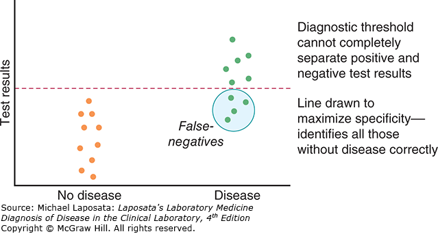
The worked example. Screening for human immunodeficiency virus (HIV) uses a highly sensitive test so that very few infected individuals are missed; confirmatory (supplemental) testing is highly specific, which minimises false-positive diagnoses. The lecture's justification is worth keeping, because it is a judgement rather than a rule: it is better to accept a few false-positives that a confirmatory test can later correct than to fail to identify people who might unknowingly infect others. That trade flips for a disease that is serious and not curable — in cancer diagnosis a false-positive is catastrophic for the patient.
Conditional probability is the umbrella idea underneath all of this: the probability of a disease or event if another event, test result, or condition is present.
1.2 · Objectives b & c — Define pretest and posttest probability
| Pretest probability | Posttest probability | |
|---|---|---|
| Definition | Likelihood of the condition before the test result is known | Likelihood of the condition after the test result is known |
| Built from | Signs and symptoms · history and risk factors · how common the condition is in the population | The pretest estimate, revised by the test's sensitivity and specificity |
1.3 · Objective f — Compare and contrast screening and diagnostic testing
| Screening testing | Diagnostic testing |
|---|---|
| Identifies the likelihood of occult disease | Complements the history and physical examination Reduces uncertainty about diagnosis and/or prognosis Helps decide management |
1.4 · Objective d — Discuss clinical principles and decision-making
The clinical reasoning process, in six steps.
| Step | What happens |
|---|---|
| 1 | Gather initial patient information |
| 2 | Organize and interpret clinical information |
| 3 | Synthesize clinical information and develop the problem representation |
| 4 | Generate hypotheses |
| 5 | Test hypotheses and establish a working diagnosis |
| 6 | Plan the diagnostic and treatment strategy |
The three questions a clinician has to answer: what disease does the patient have, should testing be done, and should this patient be treated? Clinical decision-making covers what information to gather, what diagnostics to order, how to interpret and integrate what comes back, and what management the patient needs.
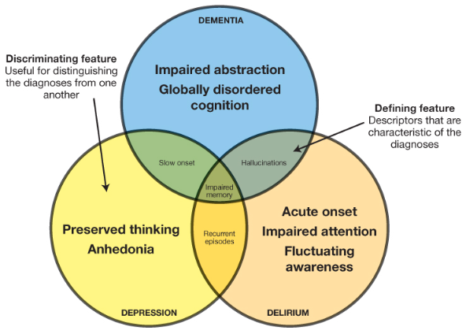
Building a differential. Start from the signs and symptoms and ask which organ or system is involved — for shortness of breath, is this cardiac, pulmonary or haematologic? Then consider the anatomy of those systems. When stuck, run a checklist mnemonic.
| VINDICATE | Worked example — chief complaint of “confusion” |
|---|---|
| Vascular | Stroke, transient ischaemic attack, subarachnoid haemorrhage |
| Infectious | Meningitis, encephalitis, sepsis |
| Neoplastic | Primary brain tumour or metastasis |
| Degenerative | Alzheimer's disease, Huntington's disease, other dementias |
| Iatrogenic / intoxication | Narcotics, alcohol intoxication or withdrawal |
| Congenital | Epilepsy (post-ictal state) |
| Autoimmune | Central nervous system lupus, neurosarcoidosis, anti-NMD encephalitis |
| Trauma | Traumatic brain injury, traumatic epidural or subdural haematoma |
| Endocrine (metabolic) | Hypoglycaemia, hypo- or hyperthyroidism, hypo- or hypernatraemia, hypercalcaemia, hepatic or uraemic encephalopathy |
The alternative organ-system checklist is “Tom G. Prince, MD, Psychiatrist, General Hospital”: Toxin/Trauma (including medications), Oncologic, Musculoskeletal/rheumatologic, Gastrointestinal, Pulmonary, Renal, Infectious, Neurologic, Cardiovascular, Endocrine, Metabolic/Genetic, Dermatologic, Psychiatric, Genitourinary/Gynecologic, Hematologic.
The hypothetico-deductive method — proposing hypotheses and testing whether they are acceptable by deciding whether the data is consistent with what is observed.
| Stage | What it does |
|---|---|
| Cues | Initial history · initial examination · screening diagnostic testing |
| Hypothesis generation | List potential diagnoses triggered by patient cues |
| Hypothesis evaluation | Gather data to confirm or exclude those hypotheses |
| Hypothesis refinement | Add new hypotheses triggered by the data gathered |
| Hypothesis verification | Confirm the “fit” of the hypotheses with the assembled data |
| Patient management | Gather data to monitor the patient's response |
Two modes of thinking. In straightforward or common situations clinicians use an intuitive system — quick, automatic, pattern-based. Pattern recognition is easy to use but is the lowest level of decision making, and it errs precisely because other possibilities are never considered. Complex situations call for a deliberate, controlled process using logic and probabilities: evidence-based medicine, clinical guidelines, and quantitative techniques.
| Analytic method | How it runs, and where it falls short |
|---|---|
| Evidence-based medicine | Formulate a clinical question → gather evidence (literature review, MEDLINE, UpToDate) → evaluate its quality and validity → decide how to use it. Limitations: time consuming, and many clinical questions have no relevant studies. |
| Clinical guidelines | Common practice, often an “if then” rule — if a patient is febrile and neutropenic, then use broad-spectrum antibiotics. Straightforward, cost-effective, the “standard of care”. Caution: apply only to patients with similar characteristics. |
| Quantitative techniques | Odds and probability — the sensitivity, specificity and pre/posttest material above. |
Suggestions for good decision-making: slow down; be aware of the base rate of disease for the diagnoses on your differential; consider what data is truly relevant; actively seek alternative diagnoses; ask questions to disprove rather than confirm your current hypothesis; and remember you are often wrong, considering the immediate implications of that.
1.5 · Objective e — Discuss the naturalistic approach
The naturalistic (event-driven) approach means treating signs and symptoms before a definitive diagnosis. It is used mostly in emergency medicine, for:
- Unstable patients
- Atypical presentations
- Ruling out the worst-case scenario
- Following responses to interventions
1.6 · Objective g — Discuss the implications for treatment
To treat versus not to treat. The value of treatment versus no treatment is a linear function of the probability of disease, weighed alongside the likelihood of success and the patient's ability to tolerate treatment.
Risk versus benefit. Because a diagnosis almost always carries some uncertainty, the decision to treat has to balance the benefit of treating a sick person against the risk of erroneously treating a well person, or one with a different disorder. Benefit and risk encompass both financial and medical consequences, and the balance must account for both the likelihood of disease and the magnitude of the benefit and the risk.
1.7 · Objective h — Recall counseling strategies to help patients adhere to treatment plans
Providers must be able to communicate evidence on prognosis, treatments, diagnostic testing and prevention, so patients understand their risks and options.
| Framework | Elements |
|---|---|
| Five As | Ask · Advise · Assess · Assist · Arrange |
| FRAMES | Feedback about personal risk · Responsibility of the patient · Advice to change · Menu of options · Empathetic style · promote Self-efficacy |
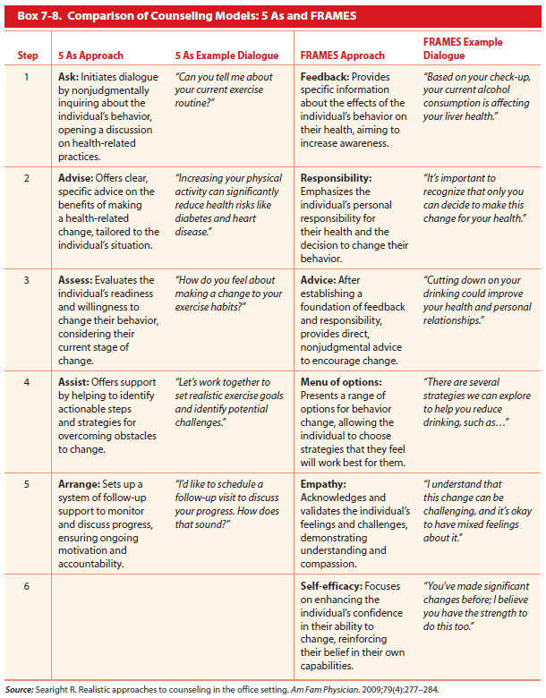
Specific counselling guidelines for adults on unhealthy alcohol use, tobacco smoking cessation and sexually transmitted infections are in Bates' Chapter 7.
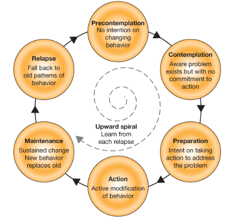
Behaviour modification. Changing behaviours is difficult, and behavioural counselling is one of the most important skills for helping patients make those changes. Identify where your patient sits on the continuum of behaviour change, and tailor interventions to their readiness and self-efficacy.
| Barriers to treatment and medication adherence | |
|---|---|
| Cost and affordability of medications or services | Low health literacy or lack of understanding |
| Cultural or religious beliefs about treatment | Fear of side effects or mistrust of providers |
| Transportation or time constraints | Mental health challenges or cognitive impairment |
| Poor communication or follow-up by the care team | |
2 · General Dermatology I
Instructional Objectives
- Review anatomy of the integumentary system
- Review physiology of the integumentary system
- Compare and contrast the etiologies, epidemiology, risk factors, clinical manifestations, differential diagnosis, diagnostic testing (including ordering and interpretation), management (acute and chronic, including applicable rehabilitative and palliative care), appropriate referrals, patient education, and prognosis of the following dermatological conditions:
- Eczema
- Diaper
- Nummular
- Periorbital
- Dyshidrosis
- Dermatitis
- Atopic
- Diaper
- Stasis
- Contact
- Seborrheic
- Perioral
- Xeroderma
- Vesiculobullous disease
- Bullous pemphigoid
- Pemphigus
- Psoriasis
- Pityriasis rosea
- Lichen planus and lichen simplex dermatitis
- Alopecia
- Areata
- Androgenetic
| She said | What it means for the exam |
|---|---|
| “I am going to expect you to know names from my class — I'm gonna be very clear which names — but I'm not expecting necessarily to know all the doses.” | Learn the agents she names. Do not memorise dosing. |
| “I would not make you guys memorize hundreds of brands of steroids.” | Only the seven agents on the potency table below are in scope. |
| On the NAAT and polymerase chain reaction hierarchy: “This is not going to be on your exam. This is just to help you for the future.” | Slides 30 and 31 are background. Know that a viral polymerase chain reaction detects viral genetic material; the taxonomy of RT-PCR, qPCR and multiplex is not examinable. |
| On the Tzanck smear and mineral oil preparation: “I've never seen this used clinically, however you need to know it because it could be on your board.” | Both are in scope despite being clinically obsolete. |
| “Make sure when you go over the PowerPoints, read headers — that's really important, because I'm separating here.” | The slide headers carry the organising structure of the material. |
| “These are like how your PANCE-style questions will be, so I want to make sure you guys understand what the expectation is.” | The four Knowledge Check vignettes at the end of the deck are the format of her exam questions. She worked all four in class. |
One line was left out deliberately. Answering a student question about image interpretation she said either “I would” or “I wouldn't actually have you interpret the picture” — two independent transcriptions disagree on the negation, and the student's question itself is inaudible. Since getting it wrong would mean telling you to skip something, treat images as fair game until she confirms otherwise.
Source: General Dermatology I lecture recording, 2026-08-19.
2.1 · Objectives a & b — Review anatomy and physiology of the integumentary system
The skin is the largest organ of the body, and everything in this block rests on knowing which layer a disease sits in. The three layers, outermost first:
| Layer | What is in it | Why it matters clinically |
|---|---|---|
| Epidermis | Keratinocytes in five strata, melanocytes, Langerhans cells, Merkel cells. Avascular — fed by diffusion from the dermis. | Impetigo, pemphigus and the superficial fungal infections live here. Loss of this layer alone means no scarring. |
| Dermis | Collagen and elastin, blood vessels, nerves, hair follicles, sebaceous and sweat glands. | Erysipelas, cellulitis and bullous pemphigoid involve this layer. Damage here scars. |
| Subcutaneous tissue | Fat, larger vessels, the base of the follicles. | Furuncles, abscesses and panniculitis such as erythema nodosum sit at this depth. |
Physiology. The skin provides a barrier against water loss, chemicals and microorganisms; regulates temperature through vasodilation, vasoconstriction and sweating; carries the sensory apparatus for touch, pressure, temperature and pain; synthesises vitamin D under ultraviolet B; and performs immune surveillance through Langerhans cells.
2.2 · Objective c — The eczema and dermatitis family
Eczema and dermatitis name the same reaction pattern. What distinguishes the members is distribution, trigger and age rather than the appearance of an individual lesion.
| Condition | Who and where | The defining feature |
|---|---|---|
| Atopic dermatitis | Infants on cheeks and extensors; children and adults in flexures | Personal or family atopy — asthma, hay fever, food allergy |
| Contact dermatitis | Anywhere the contactant touched | Sharp margins in the shape of the exposure; patch testing identifies it |
| Seborrheic dermatitis | Scalp, eyebrows, nasolabial folds, ears, central chest | Greasy yellow scale on erythema in sebum-rich sites |
| Nummular eczema | Extremities, often older adults | Discrete coin-shaped plaques |
| Dyshidrotic eczema | Palms, soles, sides of fingers | Deep-seated tapioca-like vesicles, intensely itchy |
| Stasis dermatitis | Lower legs, gaiter area, bilateral | Venous insufficiency with oedema and haemosiderin pigmentation |
| Diaper dermatitis | Convex surfaces of the napkin area | Spares the skin folds; candidal overgrowth involves them with satellite lesions |
| Perioral dermatitis | Around the mouth, sparing the vermilion border | Often follows topical corticosteroid use on the face |
| Periorbital dermatitis | Eyelids and around the eyes | Thin skin, so potent steroids are avoided |
| Xeroderma | Shins and forearms, worse in winter | Dry cracked skin from impaired barrier function |
What these look like
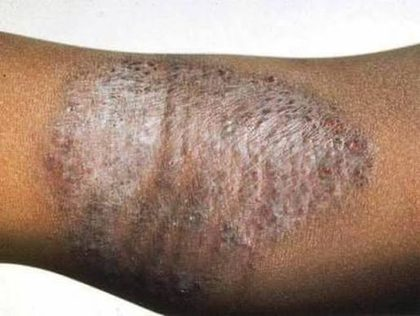
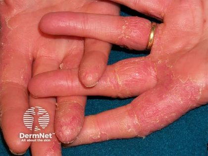
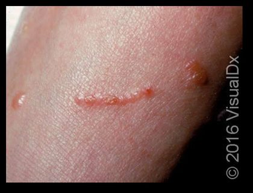
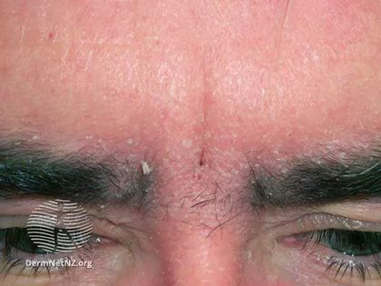
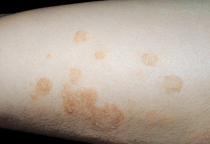
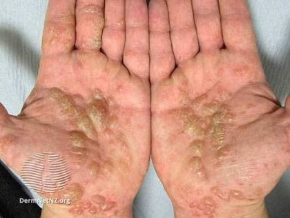
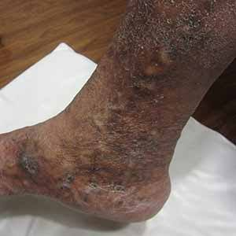
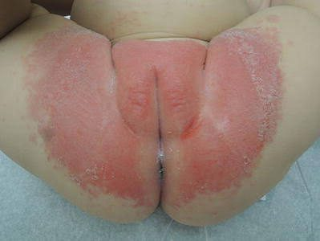
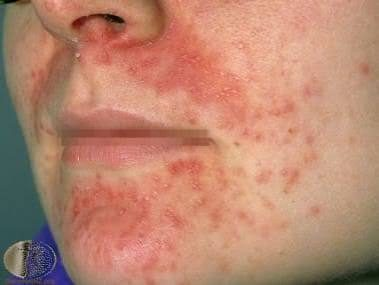
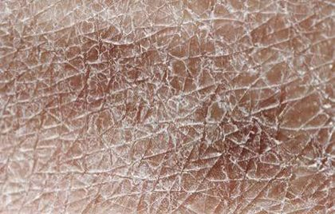
She spent real time on this and was direct about why. “All the descriptions, all the textbooks, and what you're gonna be tested on, is gonna describe the rash on Caucasian skin. This is not a Dr Jaquith thing, this is a medicine thing, this is a history thing — medicine has not been nice to minorities. It is really important that you know how to identify all of these on every single skin type.” She noted she had sourced images across ethnic groups for every condition in the deck bar one.
| Condition | On lighter skin | On darker skin |
|---|---|---|
| Atopic dermatitis | Angry, inflamed, clearly erythematous | Can appear almost silvery; erythema is far less obvious |
| Stasis dermatitis | Erythematous patches in the gaiter region | Erythema appears violaceous, grey or deep brown; palpate for warmth and oedema rather than relying on colour |
| Pityriasis rosea | Salmon-coloured lesions, resolving without mark | Post-inflammatory hyperpigmentation that can persist for months |
| Lichen planus | Pink to violaceous flat-topped papules | Violaceous shades read as darker; the flat-topped, shiny quality and Wickham striae carry more weight than colour |
The practical consequence: on darker skin, stop using erythema as the primary signal and rely on palpation, distribution, lesion shape and secondary change instead. She also raised the Fitzpatrick scale here as the way skin type is classified.
Source: lecture recording, 2026-08-19, with 2. General Dermatology I.pptx, Slides 114, 169 and 176.
2.3 · Objective c — Vesiculobullous disease
| Bullous pemphigoid | Pemphigus vulgaris | |
|---|---|---|
| Age | Elderly | Middle-aged |
| Split level | Subepidermal — below the whole epidermis | Intraepidermal — within the epidermis |
| Bullae | Tense, do not rupture easily | Flaccid, rupture easily leaving erosions |
| Nikolsky sign | Negative | Positive |
| Mucosal involvement | Uncommon | Common, often the first site |
| Prognosis | Better | Worse; was frequently fatal before corticosteroids |
What these look like
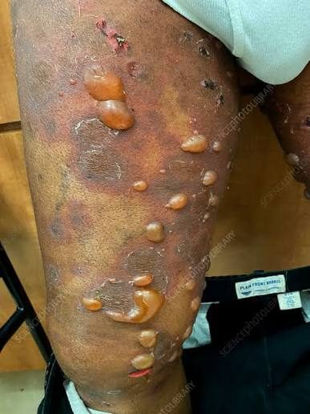
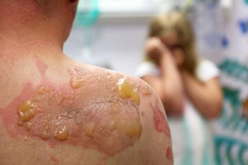
2.4 · Objective c — Papulosquamous disease
| Condition | Lesion | Distribution and course |
|---|---|---|
| Psoriasis | Well-demarcated plaques with thick silvery scale; Auspitz sign on removal | Extensor surfaces, scalp, nails; chronic and relapsing |
| Pityriasis rosea | Herald patch first, then smaller oval lesions with a collarette of scale | Christmas-tree pattern along skin lines on the trunk; self-limiting over 6 to 8 weeks |
| Lichen planus | Purple, polygonal, pruritic, planar papules; Wickham striae on the surface | Flexor wrists, ankles, oral mucosa |
| Lichen simplex chronicus | Thickened lichenified plaque with accentuated skin markings | Wherever the patient can reach to scratch; the itch-scratch cycle sustains it |
What these look like
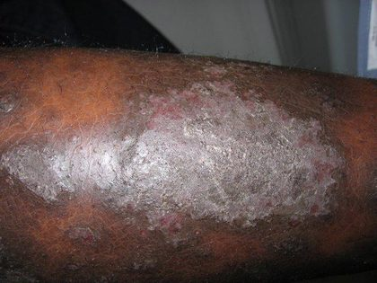
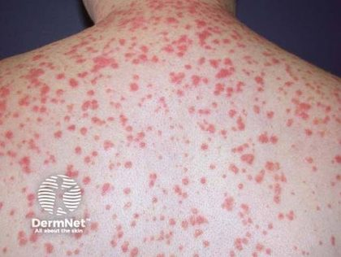
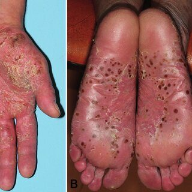
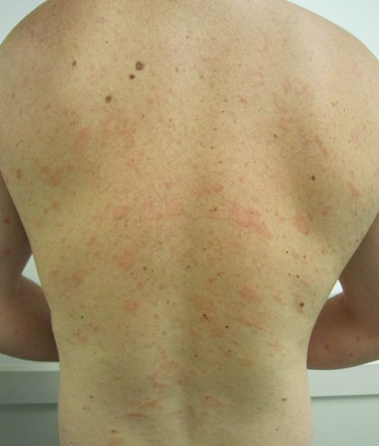
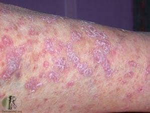
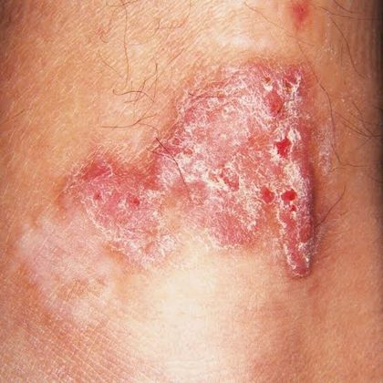
The six Ps for lichen planus — purple, polygonal, pruritic, planar, papules and plaques — is worth memorising because the description alone is close to diagnostic.
2.5 · Objective c — Alopecia
| Alopecia areata | Androgenetic alopecia | |
|---|---|---|
| Pattern | Discrete smooth round patches of complete loss | Gradual thinning — temporal recession and vertex in men, widened part in women |
| Mechanism | Autoimmune attack on the hair follicle | Androgen-driven follicular miniaturisation with a genetic component |
| Clue on examination | Exclamation-mark hairs at the edge of a patch | Preserved follicular openings with progressively finer hairs |
| Scarring | Non-scarring — regrowth is possible | Non-scarring, but the miniaturisation is progressive |
| Treatment | Intralesional or topical corticosteroid; associated with other autoimmune disease | Topical minoxidil; finasteride in men |
What these look like
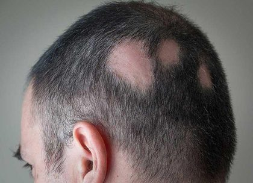
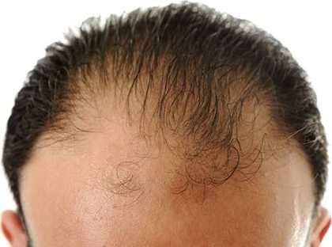
2.6 · Common dermatologic pharmacology
Four families carry most of the treatment in this lecture: emollients and barrier preparations, topical corticosteroids, topical antifungals and topical retinoids. Topical corticosteroids are usually applied twice a day for two weeks; prolonged use causes atrophy, striae, telangiectasia and hypopigmentation, so potency is chosen by site and severity.
| Potency | Agent |
|---|---|
| Mild | Hydrocortisone — all strengths (0.1%, 0.5%, 1%, 2.5%) |
| Moderate | Betamethasone valerate 0.025% |
| Medium to high | Triamcinolone acetonide 0.1% · betamethasone valerate 0.1% · betamethasone dipropionate 0.05% |
| High | Clobetasol propionate 0.05% |
Her words: “These are the ones I want you to know. If I give you a question and my slide says treatment would be a low dose corticosteroid, you might have these answer choices — you need to know that it's gonna be your hydrocortisone.” She added that she reduced the list “from a hundred to five — this is true for my class only”, so do not carry the simplification into Pharmacology.
The clinical rule she gave alongside it: a steroid on a sensitive area — the face or the genitals — should be hydrocortisone, or another low-potency agent. Betamethasone comes in two salts, valerate and dipropionate, and they sit at different potencies; the concentration alone does not tell you which tier an agent is in.
Source: 2. General Dermatology I.pptx, Slides 39–44, and the lecture recording, 2026-08-19.
Topical retinoids — adapalene, tretinoin, tazarotene, trifarotene — treat acne and photoaging, and tazarotene also treats psoriasis. Start gradually because of irritation, dryness and photosensitivity, and observe pregnancy precautions. She was specific about the titration: begin at the lowest strength and work up to nightly use, and avoid the eyes, nose and mouth.
3 · Dermatology II
Instructional Objectives
- Compare and contrast the etiologies, epidemiology, risk factors, clinical manifestations, differential diagnosis, diagnostic testing (including ordering and interpretation), management (acute and chronic, including applicable rehabilitative and palliative care), appropriate referrals, patient education, and prognosis of the following dermatological conditions:
- Erythema multiforme
- Dermatitis herpetiformis
- Acanthosis nigricans
- Epidermolysis bullosa
- Urticaria
- Erythema nodosum
- Granuloma annulare
- Pyoderma gangrenosum
- Acne rosacea
- Hyperhidrosis
- Drug Eruptions
- Steven Johnson Syndrome
- Toxic epidermal necrolysis
- Photoreactions
- Sunburn
- Photosensitivity — drug-induced, photodermatitis, polymorphous light eruption
- Solar lentigo, keratosis
- Dermatoheliosis
3.1 · Objective a — Reactive and immune-mediated conditions
| Condition | Defining feature | The one thing to carry into the exam |
|---|---|---|
| Erythema multiforme | Target lesions with three zones, acral distribution | Herpes simplex virus triggers over 50% of cases |
| Urticaria | Wheals that individually resolve within 24 hours | A wheal persisting beyond 24 hours means biopsy for urticarial vasculitis |
| Erythema nodosum | Tender bilateral anterior shin nodules that do not ulcerate | Sarcoidosis, inflammatory bowel disease, tuberculosis, streptococcus, drugs |
| Granuloma annulare | Annular ring of papules with no scale on the border | Absent scale is what separates it from tinea |
| Pyoderma gangrenosum | Rapidly enlarging ulcer with an undermined violaceous border | Pathergy — debridement makes it worse, so do not debride |
| Acne rosacea | Central facial erythema with flushing and telangiectasias, no comedones | Absence of comedones separates it from acne vulgaris |
| Hyperhidrosis | Primary is bilateral, focal, adolescent onset, absent in sleep | Generalised or nocturnal sweating means look for a secondary cause |
What these look like
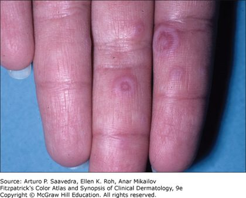
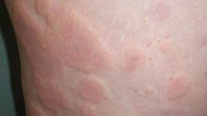
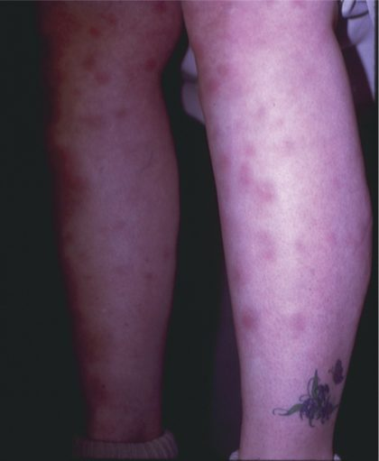
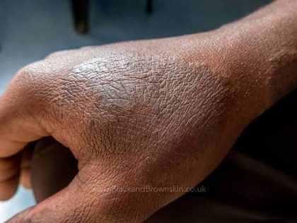
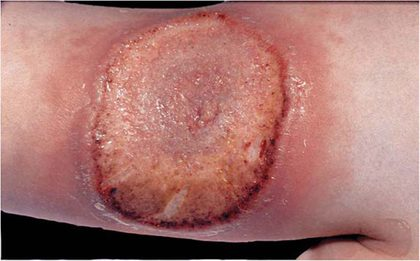
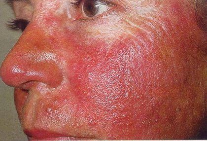
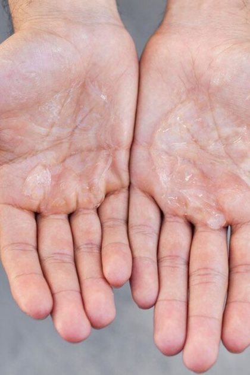
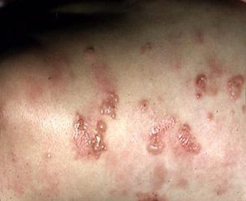
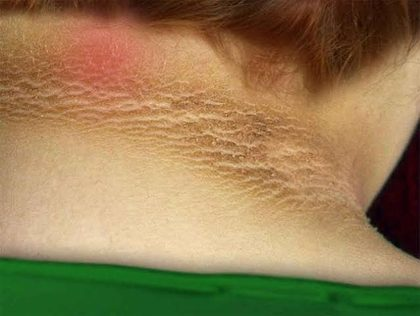
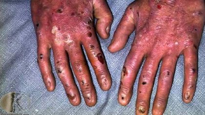
78 minutes of audio. Two statements in it point in opposite directions and are worth more than anything else in the lecture — one telling you what is on the exam, one telling you what is not.
Standing rule for anything taken from these recordings: where the audio and the slide disagree on a fact, THE SLIDE WINS. Words get said wrong in a live lecture, and one claim in this one is wrong — it is kept below with the correction attached rather than quietly removed, because knowing which spoken facts to distrust is itself worth having. What the recording is authoritative for is emphasis: what she flagged, what she excluded, and the mechanisms she explains that the slide only asserts.
| She said | What it means for you |
|---|---|
| “This is different… if you think it’s different from any other disease, what’s the likelihood it’s going to be on the test? Probably pretty high. There’s not many I can do diagnostic testing on, since they’re all clinical… it’s likely going to be on the test, just trying to help you a lot.” [12:35] | Said while pointing at dermatitis herpetiformis, and it is a rule for the whole lecture, not one condition. Almost everything here is a clinical diagnosis. The handful that are not are therefore the memorable ones, and she said outright that being different is what makes something testable. Dermatitis herpetiformis: skin biopsy is the gold standard. |
| “Don’t worry. That’s not going to be on the test. I won’t do that to you. I’m not testing for lupus right now… but that is one of, like, clinically, I want you know, one of the big ways to tell — is this lupus, is this rosacea?” [44:18] | Explicitly excluded. She taught the lupus-versus-rosacea distinction and then took it off the exam in the same breath. Worth knowing clinically and worth not spending revision time on: the lupus butterfly rash spares the nasolabial folds; rosacea involves them. And on the antinuclear antibody test — a negative result lowers the probability, a positive one only means more testing, because plenty of things make it positive. |
| “Dapsone… we also want to check the glucose-6-phosphate dehydrogenase deficiency. This is a condition you cannot take dapsone in.” [13:45] | The full dermatitis herpetiformis package, and the deck does not spell all of it out: dapsone acutely, but check for glucose-6-phosphate dehydrogenase deficiency first because it is a contraindication; strict gluten-free diet long term; refer to gastroenterology for colonoscopy, because there is a high chance of coeliac disease; and refer to a registered dietitian. |
| “Metronidazole, by far the first line treatment… azelaic acid can be effective, you do have to watch, as azelaic acid can be a little bit more drying… these patients already have impaired barrier.” [44:58] | Topical metronidazole is first line for rosacea. Azelaic acid is an alternative but is drying, and these patients already have a compromised barrier. If it is really bad, low-dose doxycycline — started twice daily and stepped down to once. |
| “This is by far the classic presentation, the one that I want you to really know about.” [37:36] | On pyoderma gangrenosum. The presentation she wants: begins as a small pustule or nodule, becomes a rapidly expanding painful ulcer with a well-undermined border, and the lower extremity is the most common site. |
| “Allopurinol is the most common cause worldwide of this… it’s drug induced in 80% of cases.” [57:15] | Half right, and the slide is the half to trust. The proportion is correct — slide 87 says toxic epidermal necrolysis is drug-induced in more than 80% of cases. But the slide says allopurinol is “the most common cause in Asia”, not worldwide, and it is one of several leading culprits alongside the aromatic anticonvulsants, sulfonamides, oxicam non-steroidals and nevirapine. Go with the slide. |
| “I’ve never seen it, but you need to know it, in case you happen to be one of those… what I want you to know: this is caused by a mutation in structural proteins.” [20:58] | On epidermolysis bullosa. Rare enough that she has not seen a case, and flagged anyway — and what she wants from it is the mechanism, a structural protein mutation, rather than a clinical picture. |
| “Epinephrine, or EpiPen, is a brand name for that” — introduced as the take-home [27:26] | On urticaria and angioedema. She marked this one as the take-home point of that section. |
| “Anywhere from one to five centimetres, on anterior shins or your tibial surface, is the most common” [31:23]; “strep throat… which is the most common form of it” [30:50] | Erythema nodosum: 1–5 cm, anterior shins, and streptococcal pharyngitis is the commonest trigger. |
| “The most common idiopathic photodermatosis… particularly young middle-aged women… higher altitudes” [1:06:36] | Polymorphous light eruption. Three discriminators in one sentence: commonest of its class, the demographic, and the altitude association. |
Quoted from the 19 August 2026 lecture recording, with timestamps, and cross-examined against Notability’s independent transcript. Where the recording and a slide disagree on a number, the slide wins.
3.2 · Objective a — Lesions that signal systemic disease
| Skin finding | What to screen for |
|---|---|
| Dermatitis herpetiformis | Coeliac disease in all patients; autoimmune thyroid disease; T-cell lymphoma |
| Acanthosis nigricans | Type 2 diabetes, polycystic ovarian syndrome, metabolic syndrome; gastrointestinal malignancy where onset is sudden in an adult |
| Erythema nodosum | Chest radiograph, antistreptolysin O titre, tuberculin or interferon gamma testing, colonoscopy |
| Pyoderma gangrenosum | Inflammatory bowel disease in 25 to 50%; haematologic malignancy; monoclonal gammopathy; rheumatoid arthritis |
| Generalised granuloma annulare | Diabetes, thyroid disease, dyslipidaemia; lymphoma in adults over fifty |
| Secondary hyperhidrosis | Phaeochromocytoma, hyperthyroidism, lymphoma, menopause |
Dermatitis herpetiformis is diagnosed by perilesional direct immunofluorescence showing granular immunoglobulin A deposits at the dermal papillae. Treatment is dapsone for rapid symptom control plus a lifelong gluten-free diet, which is what allows dapsone to be tapered.
Epidermolysis bullosa is diagnosed by transmission electron microscopy with immunofluorescence antigen mapping, supported by a genetic panel.
3.3 · Objective a — Stevens-Johnson syndrome and toxic epidermal necrolysis
| Stevens-Johnson syndrome | Overlap | Toxic epidermal necrolysis | |
|---|---|---|---|
| Epidermal detachment | Under 10% body surface | 10 to 30% | Over 30% |
| Mortality | 1 to 5% | Intermediate | 30 to 35% |
What these look like
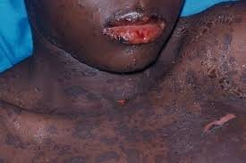
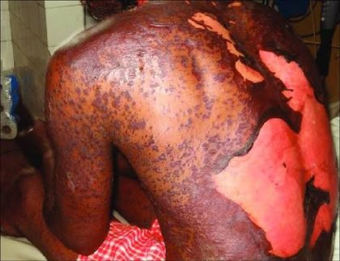
Both are severe type IV hypersensitivity reactions, drug-induced in over 80% of cases. The leading culprits are the aromatic anticonvulsants (carbamazepine, phenytoin, lamotrigine, phenobarbital), sulfonamide antibiotics, allopurinol (the commonest cause worldwide and in Asia), oxicam nonsteroidal anti-inflammatory drugs and nevirapine. Mycoplasma pneumoniae and herpes simplex virus are the infectious triggers, especially in children.
| SCORTEN — each variable scores one point, calculated within 24 hours and repeated on day 3 | |
|---|---|
| Age over 40 | Malignancy present |
| Heart rate over 120 | Initial detachment over 10% body surface |
| Blood urea nitrogen over 28 mg/dL | Bicarbonate under 20 mEq/L |
| Glucose over 252 mg/dL | |
| Predicted mortality: 0–1 → 3.2% · 2 → 12% · 3 → 35% · 4 → 58% · 5 or more → 90% | |
Human leukocyte antigen associations matter for prescribing: HLA-B*15:02 with carbamazepine, HLA-B*58:01 with allopurinol. Survivors need lifelong avoidance of the drug class, a medical alert bracelet, and first-degree relatives counselled about shared genetic risk.
3.4 · Objective a — Photoreactions and photodermatology
| Phototoxicity | Photoallergy | |
|---|---|---|
| Mechanism | Non-immunologic, dose-dependent | Immunologic type IV, dose-independent |
| First exposure | Reacts on it | Sensitises; reaction on re-exposure |
| Timing | Within hours | Delayed |
| Appearance | Exaggerated sunburn, confined to exposed skin | Eczematous and itchy, extending beyond exposed skin |
| Drugs | Tetracyclines (doxycycline), fluoroquinolones, amiodarone, thiazides, furosemide, voriconazole | Sunscreen chemicals (oxybenzone), sulfonamides, topical antihistamines, phenothiazines |
| Test | Minimal erythema dose testing | Photopatch testing — the gold standard |
What these look like
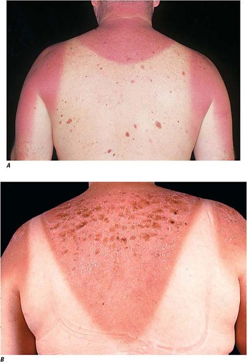
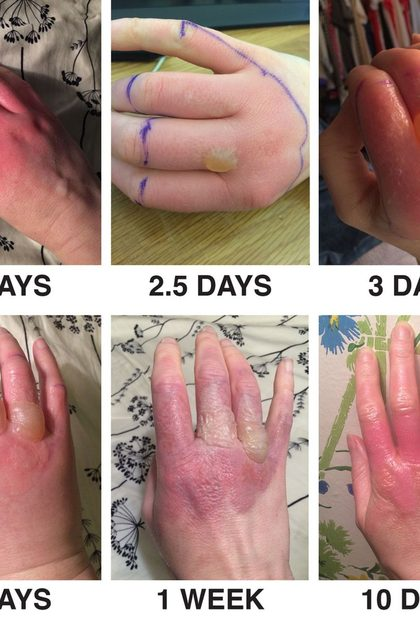
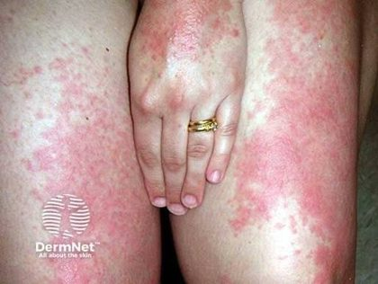
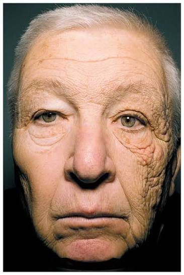
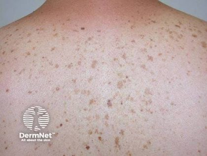
Photopatch reading: a reaction on the irradiated patch only is photoallergy; a reaction on both patches is ordinary contact allergy.
| Condition | The hook |
|---|---|
| Sunburn | Ultraviolet B at 290 to 320 nm, direct DNA damage, onset 3 to 5 hours, peak at 12 to 24 hours |
| Phytophotodermatitis | Furanocoumarins from limes, celery, parsley, fig plus ultraviolet A → streaked hyperpigmentation |
| Polymorphous light eruption | Commonest idiopathic photodermatosis; spring onset, spares chronically exposed skin, hardens by late summer |
| Solar lentigo | Uniform pigment, moth-eaten border on dermoscopy; lentigo maligna is the lesion to exclude |
| Actinic keratosis | Sandpaper texture; TP53 mutation; field cancerization, so field-directed therapy for confluent disease |
| Dermatoheliosis | Solar elastosis is the histological hallmark; tretinoin is the only agent approved for photoaging |
4 · Cutaneous Bacterial Infections
Instructional Objectives
- Compare and contrast the etiologies, epidemiology, risk factors, clinical manifestations, differential diagnosis, diagnostic testing (including ordering and interpretation), management (acute and chronic, including applicable rehabilitative and palliative care), appropriate referrals, patient education, and prognosis of the following cutaneous bacterial infections:
- Acne vulgaris
- Impetigo
- Cellulitis
- Erysipelas
- Erythrasma
- Folliculitis
- Furuncles
- Carbuncles
- Abscess
- Paronychia/felon
- Hidradenitis suppurativa
- Necrotizing fasciitis
- Discuss unique considerations of methicillin-resistant staphylococcus aureus (MRSA) skin infections, including risk factors, presentation, and treatment.
- Differentiate primary from secondary bacterial infection of the skin.
- Identify medical care strategies for cutaneous bacterial infections in the lecture topic list for the following populations
- infant
- child
- adolsecent
- adult
- elderly
4.1 · Objective a — Acne vulgaris
Four factors, temporal sequence not fully understood: follicular hyperkeratinisation, increased sebum, Cutibacterium acnes (an anaerobic Gram-positive rod, formerly Propionibacterium acnes) and inflammation from the immune response to it. The hallmark lesion is the comedone; its absence is what rules acne out and rosacea in.
| Severity | 2016 American Academy of Dermatology recommendation |
|---|---|
| Comedonal | Topical retinoid; switch to azelaic or salicylic acid if not tolerated |
| Mild papulopustular and mixed | Topical antimicrobial plus topical retinoid, or benzoyl peroxide plus a topical antibiotic |
| Moderate papulopustular and mixed | Topical retinoid and oral antibiotic and topical benzoyl peroxide |
| Severe (nodular) | The same triple combination, or oral isotretinoin as monotherapy |
What these look like
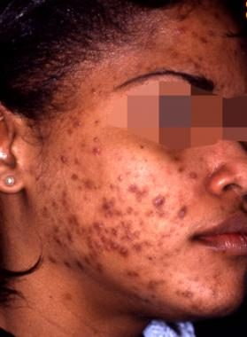
73 minutes of audio. One heuristic, one slide flagged out loud, and several prescribing details that are not on any slide.
Standing rule: where the audio and the slide disagree on a fact, THE SLIDE WINS. Every factual claim below was checked against the deck before being recorded here — the microbiology, the antibiotics and the demographics all hold. What the recording is authoritative for is emphasis, and for the prescribing detail that never reaches a slide at all.
| She said | What it means for you |
|---|---|
| “Staph aureus also for this is most common. If you guys know, this is the theme. The staph aureus, it causes a lot of these conditions. You don’t know the answer, guess staph aureus.” [1:04:05] | Exam-taking advice from the person teaching the exam. Across this whole lecture — folliculitis, furuncle, carbuncle, abscess, impetigo, cellulitis — Staphylococcus aureus is the recurring answer. Know the exceptions properly (erysipelas and ecthyma lean streptococcal, hot tub folliculitis is Pseudomonas), and let staph be the default everywhere else. |
| “These are really important slides right here. Okay, 32 and 33, make sure you know this.” [15:40] | The acne treatment ladder. She named these two slides specifically, which is as direct a flag as this lecture gives. Mild comedonal → topical retinoid, or azelaic acid if not tolerated. Mild mixed with pustules → topical antimicrobial (benzoyl peroxide) plus a topical retinoid, or benzoyl peroxide plus a topical antibiotic. Moderate → topical retinoid + oral antibiotic + benzoyl peroxide. Severe → the same three, or oral isotretinoin. |
| “Bactroban, something you should know this antibiotic, just because it’s something that you’re going to prescribe quite a bit… it has to be the ointment, don’t write the cream, because the cream for some reason is like a hundred times the price… it’s never covered.” [21:52] | Mupirocin is the prescription version of what patients buy over the counter. Write the ointment, not the cream — the ointment is covered by insurance and the cream is not. A prescribing detail that appears on no slide and will save a patient a phone call. |
| “Keflex, that’s like the most common medication that we use, and MRSA suspected you will add on Bactrim… cephalexin plus Bactrim double strength is what we’ll do if it’s MRSA.” [23:16] | Her simplified default. Cephalexin as the standard oral agent; add trimethoprim-sulfamethoxazole double strength when methicillin-resistant Staphylococcus aureus is suspected, because the combination is broad enough to cover before susceptibilities return. Susceptibility testing then confirms. |
| Nasal mupirocin twice a day for five days “will kill the colonization within their nose” [22:56] | For recurrent folliculitis, check whether the patient is a Staphylococcus aureus carrier and decolonise the nares. She notes the pre-filled swabs were discontinued, so it is applied manually now. |
| “I ask them to come back 24 to 48 hours and make sure it’s effective, because this spreads so fast.” [1:01:43] | On cellulitis. Non-purulent cellulitis over a small surface area is treated with outpatient oral antibiotics — but with a mandatory 24-to-48-hour review. That interval is the safety net, and it is the kind of thing a management question turns on. |
| “Have you guys ever heard of flesh-eating bacteria? … That’s what this is.” [1:10:07] | Necrotizing fasciitis. She then gives the microbiology plainly: polymicrobial, aerobic or anaerobic from mixed flora, or group A Streptococcus. |
| “You don’t want to apply the topical tretinoin and benzoyl peroxide together… tretinoin is usually always done at night, benzoyl peroxide you can do during the day.” [16:30] | Acne patient education, none of it on a slide: separate the two because of irritation; do not wash the face more than twice a day; gentle cleanser with warm, not hot water because hot strips the barrier; avoid oil-based make-up; four to six weeks to improve; and do not pick, because picking is what scars. |
| “Pseudofolliculitis… most commonly occurs on black and brown males, or has curlier facial or body hair. This is what this normally — you will see this, very very common.” [26:14] | She was explicit about who gets it and why — hair curvature, not hygiene — and about how often you will see it. |
| “Shaving — that’s where I see this by far most common… particularly the groin area… usually it’s abrupt eruption, hot tubs too.” [17:37] | On folliculitis. Her clinical experience puts the groin and shaving first, and hot tubs second — and hot tub folliculitis is the one that is Pseudomonas rather than staph. |
Quoted from the 19 August 2026 lecture recording, with timestamps. Where the recording and a slide disagree on a fact, the slide wins; where the recording adds a prescribing detail the slide does not carry, it is recorded here as hers.
Benzoyl peroxide goes with every antibiotic, topical or oral, to reduce resistance. Oral tetracyclines are kept to three to four months for the same reason.
Patient education: separate tretinoin and benzoyl peroxide by at least three hours; wash no more than twice daily with a gentle cleanser and warm water; use non-comedogenic products; expect four to six weeks for improvement and three to four months on the back and chest. Scarring out of proportion to lesion count suggests the patient is picking.
4.2 · Objective a — Follicular and glandular infections
| Condition | What it is | Key discriminator |
|---|---|---|
| Folliculitis | Inflammation of the follicle wall and ostia — a follicular pustule | Pustule pierced by a central hair; Staphylococcus aureus commonest |
| Pseudomonas folliculitis | Pseudomonas aeruginosa from inadequately chlorinated water | 8 hours to 5 days after a hot tub; spares face, neck, palms, soles; self-limiting in 2 to 10 days |
| Pseudofolliculitis barbae | Foreign body reaction to a cut hair re-entering the skin | Not an infection. Change the shaving, do not just treat the papules |
| Furuncle | Deep abscess of a follicle and adjacent subcutaneous tissue | Single opening; no antibiotic if afebrile with one lesion under 5 mm |
| Carbuncle | Two or more confluent furuncles with separate heads | Sieve-like openings, systemic symptoms, and incision and drainage is the mainstay |
| Hidradenitis suppurativa | Inflammation of apocrine glands | Three criteria: typical lesions, axilla and groin distribution, recurrence more than twice in six months |
| Erythrasma | Corynebacterium minutissimum in the upper stratum corneum | Coral-red fluorescence under a Wood's lamp |
What these look like
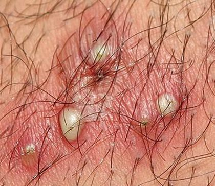
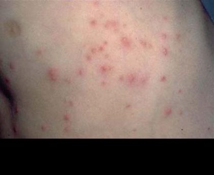
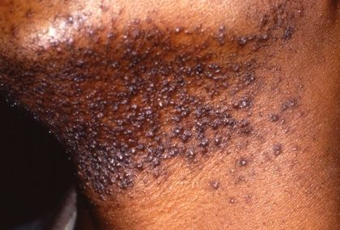
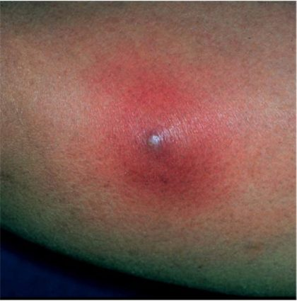
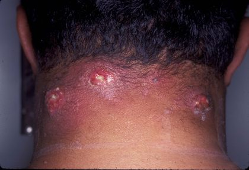
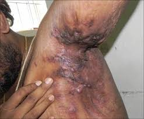
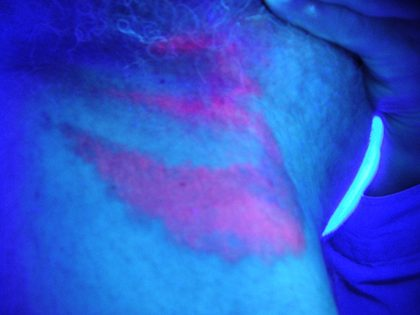
Recurrent folliculitis or furunculosis means looking for nasal carriage of Staphylococcus aureus — mupirocin ointment in the nasal vestibule twice daily for five days — alongside obesity and diabetes.
Hidradenitis suppurativa is the one with a real treatment ladder: prevention (smoking cessation is essential, weight loss, avoid heat and friction), topical steroid with topical antibiotic, intralesional triamcinolone, oral retinoid, spironolactone or combined oral contraceptive, infliximab for severe disease, and wide excision for the best chance of cure.
4.3 · Objective a — Impetigo, erysipelas, cellulitis and abscess
| Impetigo | Erysipelas | Cellulitis | |
|---|---|---|---|
| Depth | Superficial epidermis | Upper dermis and superficial lymphatics | Deeper dermis and subcutaneous tissue |
| Organism | Staphylococcus aureus or Streptococcus pyogenes | Group A streptococcus | Group A streptococcus or Staphylococcus aureus |
| Border | Crusted erosion | Raised, sharply demarcated | Not raised, not demarcated |
| Treatment | Mupirocin topically; cephalexin orally, the drug of choice in children | Penicillin V; clindamycin if penicillin allergic | Dicloxacillin or cephalexin; cover MRSA if purulent |
What these look like
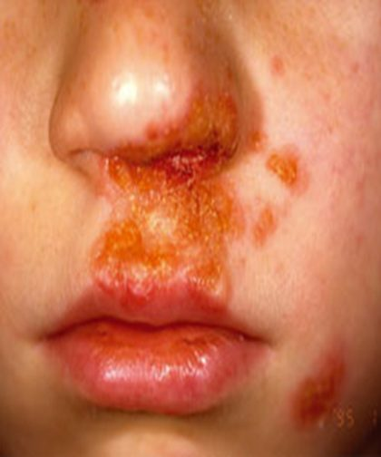
Impetigo comes in three forms: non-bullous (commonest, honey-coloured adherent crust, lymphadenopathy common), bullous (exclusively Staphylococcus aureus through epidermolytic toxins, tense bullae leaving collarettes, lymphadenopathy uncommon) and ecthyma (ulcerates into the dermis, thick grey-yellow crust, heals slowly with a scar).
An abscess follows traumatic inoculation, whereas a furuncle arises from an infected follicle. If it does not drain spontaneously, incise and drain it.
The cellulitis pitfall: tense, cyanotic, bronzed or blanched tissue is devitalised. It is not perfused, so antibiotics never reach it, and it needs surgical debridement. Expect the leg to look worse on day one, fever gone by 24 hours, inflammation settling over one to two weeks. Fever beyond 48 hours means change the antibiotic, guided by culture.
4.4 · Objective a — Paronychia and necrotizing fasciitis
| Acute paronychia | Chronic paronychia | |
|---|---|---|
| Cause | Bacterial, Staphylococcus aureus or Streptococcus pyogenes | Inflammatory reaction to irritants; Candida albicans commonest |
| Trigger | Manicure, ingrown nail, hangnail, nail biting | Repeated water immersion — cleaners, cooks, bartenders, dishwashers, swimmers |
| Timing | 2 to 5 days after trauma | At least 6 weeks |
| Treatment | Warm soaks; incision and drainage if purulent. Clindamycin if nail biting, for oral flora | Keep hands dry; topical antifungal; oral fluconazole if severe |
What these look like
4.5 · Objectives b, c & d — MRSA, primary versus secondary infection, and care across the age range
Methicillin-resistant Staphylococcus aureus. Three oral agents recur across this entire lecture: trimethoprim-sulfamethoxazole, clindamycin and doxycycline, with linezolid and ciprofloxacin in particular settings. The methicillin-sensitive agents are dicloxacillin and cephalexin. Culture the material from any drained lesion. Risk groups named include health-care workers and teachers, and nasal carriage sustains recurrence.
Primary versus secondary infection. A primary infection arises in previously normal skin — impetigo through a minor cut, cellulitis through tinea pedis. A secondary infection arises in skin already damaged by another condition — bullous impetigo invading eczema, or acne lesions becoming fluctuant and purulent.
| Population | What changes |
|---|---|
| Infant and child | Impetigo predominates; cephalexin is the drug of choice; doxycycline only over eight years; isolate 24 to 48 hours after starting treatment |
| Adolescent | Acne vulgaris is more common and more severe in males; pseudofolliculitis barbae begins with shaving |
| Adult | Post-adolescent acne is more common in women over 25; hidradenitis suppurativa presents here |
| Elderly | Cellulitis and necrotizing fasciitis carry higher risk; comorbidity and immunosuppression lower the threshold for workup and admission |
5 · Dermatological Infestations
Instructional Objectives
- Compare and contrast the etiologies, epidemiology, risk factors, clinical manifestations, differential diagnosis, diagnostic testing (including ordering and interpretation), management (acute and chronic, including applicable rehabilitative and palliative care), appropriate referrals, patient education, and prognosis of the following dermatological infestations:
- Scabies (Sarcoptes scabei)
- Lice (Pediculus humanus capitis)
- Bedbugs (Cimex pilosellus)
- Fleas
- Mites
- Cutanea larvae migrans
- Fire ants
- Spider bites
- Ticks
- Caterpillar
- Bee stings
- Cercarial dermatitis
- Differentiate primary from secondary skin lesions
- Identify medical care strategies for common dermatological infestations in the lecture topic list for the following populations.
- infant
- child
- adolescent
- adult
- elderly
5.1 · Objective a — Scabies and lice
Scabies is caused by Sarcoptes scabiei variety hominis, transmitted by close physical contact for 15 to 20 minutes or through bedding and underclothing. The pathognomonic lesion is a thin thread-like linear or J-shaped burrow, 1 to 10 mm long, best seen in the interdigital webs and wrists.
| First infestation | Reinfestation | |
|---|---|---|
| Pruritus appears | 4 to 6 weeks — many not for 3 months | 2 to 3 days |
What these look like
105 minutes with Professor Shah. Every factual claim here was checked against her deck before being written down, and they all hold; the one item that is not on a slide is labelled as such below rather than passed off as deck content.
| She said | What it means for you |
|---|---|
| “You will see surrounding scratch marks… but it leaves the flakes, no skin breakdown. So that’s classic, and that’s one way you’re going to differentiate it. And you can’t ask that history question. That’ll be something you see on your exam.” [1:14:37] | The clearest exam flag in the lecture. On the ground she would ask about travel and barefoot exposure; on paper you cannot, so the exam has to give you the picture instead. For cutaneous larva migrans that means the serpiginous, advancing track with scratch marks that flake but do not break the skin. Recognise it from the description, because the history will not be there to help. |
| “For this, it will be based on clinical findings… that serpiginous rash that I showed you, that is what you will see. That is a classic presentation… the other thing you can do is look at it under a light, but that would be a little bit more invasive than it needs to be.” [1:14:49] | Cutaneous larva migrans is a clinical diagnosis. She explicitly deprecates reaching for anything further once the serpiginous track is visible. |
| “Albendazole, albendazole, albendazole, or you can do ivermectin… ivermectin has a lot of follow-up management… you have to draw labs, make sure that the liver is fine.” [1:15:14] | She said the drug name three times. Slide 54 gives the regimens: albendazole 400 mg by mouth daily for three days, or ivermectin 200 micrograms per kilogram daily for one or two days. Her addition is the monitoring burden that makes albendazole the easier choice. |
| “You’ll see this delta wing jet… it means that there’s a heavy area of mites and eggs in this region.” [31:02] | The dermoscopic sign in scabies, and it is on the slide as the classic finding: a dense scabies head, body, eggs and burrow. She notes you will practise with a dermatoscope in Physical Diagnosis lab. |
| “You would apply blue-black ink to the lesion… and the lesion would be non-excoriated, one they haven’t gone in and scratched.” [31:25] | The burrow ink test, with the condition that makes it work. Excoriated lesions take up ink everywhere and tell you nothing. The three diagnostic routes on the slide are skin scraping, dermoscopy and the burrow ink test. |
| “This is part of your counseling… they need to know these steps. Otherwise… they’re going to come back in X amount of days with the same symptoms, even if they’re using the medications, because they’re going to get re-infected. Whoever they’re living with, you should treat them all.” [33:36] | Why treatment failure is usually not treatment failure. Slide 18 backs the specifics: bedding and clothing washed at 60 degrees Celsius, or bagged in a warm place for 14 days, and treat every infected person in the family or group. A patient returning with the same symptoms has usually been re-infected, not under-treated. |
| “You have your blue in the middle. You have your white around it. And then you have your red around that… that’s like a hallmark sign… you have to be the one describing it, so make sure you’re aware of what the words are for it.” [1:19:25] | The brown recluse bite, and the slide agrees: hallmark — red, white and blue sign. Her point about needing the words is worth taking literally: blue centre (ischaemia), white ring (vasoconstriction), red outer (inflammation). Then the progression she gives — necrosis → eschar → ulceration, and systemic symptoms such as nausea and vomiting mean escalation. |
| “Hobo spider is an aggressive spider. We’ve talked about three so far; two of them have not been aggressive. This one is aggressive.” [1:21:41] | Confirmed on the slide: Tegenaria agrestis, aka the aggressive house spider, often mistaken for a brown recluse, and the predominant cause of necrotic arachnidism in the Pacific Northwest. Black widow and brown recluse are the two non-aggressive ones. Bites July to September during mating; webs in basements, wood piles and bushes. |
| “Why do we need to know if they have seen the spider?… it can guide our treatment and we’re not trying to guess what it is… It just means we fix our face and then we take care of our patient.” [1:21:53] | If a patient brings the spider in, that is useful rather than alarming — identification directs management instead of leaving you to infer it from the wound. |
| “Neck is the most common place.” [40:04] | Her clinical addition, not a slide fact. Said answering a question about where to look for head lice. The deck gives the diagnostic method rather than the site — nits found by nit combing and wet combing, distinguished from dandruff because nits cannot be removed from the hair shaft, viable eggs tan to brown and hatched remains clear or white. Take the neck as a place to look first, not as something the deck will test. |
Quoted from the 20 August 2026 lecture recording, with timestamps. Where the audio and a slide disagree on a fact, the slide wins; every factual claim above was checked and holds.
Distribution favours interdigital webs, sides of fingers, volar wrists, elbows, axillae, scrotum, penis, labia and areolae, with head and neck spared in healthy adults. In infants, the elderly and the immunocompromised, head and neck may be involved, and infants also get indurated crusted nodules on the trunk and intertriginous areas.
Diagnosis is by microscopic identification of the organism, ova or faeces: skin scraping of an unexcoriated burrow with a number 15 blade and mineral oil, dermoscopy showing the delta-wing jet sign, or the burrow ink test (a zigzag line running away from the lesion).
Treatment is topical permethrin overnight to the entire skin surface with attention to creases, and a second application one week later. Wash bedding and clothing at 60 degrees Celsius or bag it for 14 days, and treat all infested contacts. Ivermectin every two weeks for two to three doses is added for hyperkeratotic or immunosuppressed cases. Rash and itch may last four weeks after cure. Complications: staphylococcal superinfection, persistent post-scabietic papules, and psychological effects.
| Head lice | Body lice | Pubic lice | |
|---|---|---|---|
| Organism | Pediculus humanus capitis | Pediculus humanus humanus | Phthirus pubis |
| Who | Children 3 to 12 | Homeless, refugees, crowded conditions | All social levels; often a concurrent sexually transmitted infection |
| Signs | Nits fixed to the hair shaft; excoriations, scaling | Linear excoriations on back, neck, shoulders, waist | Maculae caeruleae — slate-grey macules about 1 cm; periumbilical papular urticaria |
| Diagnosis | Wet combing for live lice | Examine clothing seams; shake over white paper | Nits at the base of hairs; microscopy of a plucked hair |
Nits cannot be pulled off the hair shaft — that is what separates them from dandruff. A no-nit school policy is not recommended by the American Academy of Pediatrics, because nits persist for months after cure and exclusion costs school days. Fumigation is not recommended; bag or dry clothing and bedding and vacuum.
5.2 · Objective a — Bedbugs, fleas, stings and caterpillars
| Exposure | Presentation | Management |
|---|---|---|
| Bedbugs (Cimex) | Painless bites in a linear row of three — “breakfast, lunch and dinner”; blood flecks on linen | Symptomatic; a professional exterminator is necessary. They survive a year without a meal |
| Tungiasis (Tungidae) | Papules enlarging to a firm yellow translucent nodule on the feet, after barefoot beach exposure in endemic areas | Dermoscopy shows ovoid eggs; excision or cryotherapy, tetanus prophylaxis, systemic antibiotics |
| Fleas (Pulicidae) | Clustered urticarial papules on the lower legs | Symptomatic. Rat fleas carry bubonic plague; cat fleas carry plague and endemic typhus |
| Hymenoptera | Burning and local urticaria; severe local reaction lasts a week; systemic reaction in 0.4 to 3% | Scrape a honeybee stinger off with a card edge. Epinephrine for anaphylaxis; auto-injector and desensitisation afterwards |
| Caterpillars | Gypsy moth → papules in linear streaks. Asp or puss caterpillar (most poisonous) → intense pain, train-track purpura | Strip the hairs off with adhesive tape; antihistamines, steroids, narcotic analgesia, antivenom for some |
What these look like
5.3 · Objective a — Cutaneous larva migrans and cercarial dermatitis
| Cutaneous larva migrans | Cercarial dermatitis | |
|---|---|---|
| Organism | Animal hookworm larvae, mostly dog and cat | Cercarial form of parasitic flatworms, via snails |
| Exposure | Sand or soil with animal faeces, tropical and subtropical | Fresh water — Great Lakes, rice paddies |
| Lesion | Raised serpentine trail advancing 2 to 3 cm a day, lasting 2 to 8 weeks | Prickling 30 minutes, itch at 10 to 12 hours, papules by 24 hours, peak at 48 to 72 hours |
| Treatment | Albendazole 400 mg daily for 3 days, or ivermectin. No excision, no cryotherapy | Symptomatic — antihistamines, oatmeal baths, aspirin, glucocorticoids |
What these look like
5.4 · Objective a — Spider bites
| Black widow | Brown recluse | Hobo | |
|---|---|---|---|
| Identification | Red hourglass under the abdomen | Dark fiddle on the cephalothorax | Grey herringbone on the abdomen |
| Range | All but the far north | Midwest and Southeast | Pacific Northwest |
| Bite | Painful; sweating and piloerection within 30 minutes, then cramping abdominal pain and spasm | Red, white and blue sign; necrosis at 2 to 3 days, eschar at 5 to 7 | Painless; induration and paraesthesia within 30 minutes, vesicles by 36 hours |
| Venom | Alpha-latrotoxin, a neurotoxin | Local cytotoxic effect | Local, with systemic symptoms |
| Treatment | Calcium gluconate, narcotics, muscle relaxants, benzodiazepines; check tetanus | Pain control, warm compresses; delay surgery until the wound is stable | Supportive; heals over weeks, headache up to a week |
What these look like
Tarantulas shed urticating hairs that embed in skin and eyes — topical corticosteroid for the skin, ophthalmology for the eye.
5.5 · Objective a — Tick-borne illness
| Lyme disease | Rocky Mountain spotted fever | |
|---|---|---|
| Organism | Borrelia burgdorferi, a spirochete | Rickettsia rickettsii |
| Geography | Northeast and upper Midwest | Southeastern and south central states, spring and early summer |
| Rash | Erythema migrans — over 5 cm, central clearing, about a week after the bite | Starts ankles and wrists, spreads centripetally over 6 to 18 hours, involves palms and soles, spares the face |
| Diagnosis | Clinical if erythema migrans present. Otherwise enzyme-linked immunosorbent assay, C6 peptide, Western blot | Indirect immunofluorescence assay is the gold standard but rarely diagnostic before day 7 |
| Treatment | Doxycycline first line; amoxicillin in children and pregnancy; macrolide second line; 10 to 14 days | Doxycycline for everyone, including pregnancy and children, with desensitisation where contraindicated; 5 to 10 days |
What these look like
Lyme stages: 1 early localised (erythema migrans, about a week); 2 early disseminated (days to weeks — cranial nerve palsies, meningitis, radiculopathy, arthralgia); 3 late persistent (months to years — monoarticular arthritis of a weight-bearing joint, subacute encephalopathy, acrodermatitis chronica atrophicans). Intravenous ceftriaxone, cefotaxime or penicillin G for arthritis and acrodermatitis. There is no human vaccine; there is one for dogs. Repellents: DEET, PMD, picaridin, reapplied about every two hours, plus pyrethrins on clothing. Prophylactic antibiotics after a tick bite are not recommended for Rocky Mountain spotted fever.
5.6 · Objectives b & c — Primary versus secondary lesions, and care across the age range
Primary lesions affect the epidermis and superficial dermis; secondary lesions infiltrate the dermis or subcutaneous tissue. Their combination determines the diagnostic category, also called the reaction pattern. Crusting or scaling tells you the epidermis has been affected. Once the reaction pattern is recognised, colour, shape, configuration and distribution narrow the differential further.
| Population | What changes |
|---|---|
| Infant | Scabies involves head and neck and produces trunk nodules; permethrin remains the treatment |
| Child | Head lice peak between 3 and 12 years; Lyme disease gets amoxicillin; the no-nit policy is not recommended |
| Adolescent | Outdoor and water exposure drives hot tub folliculitis, cercarial dermatitis and tick bites |
| Adult | Travel history opens tungiasis and cutaneous larva migrans; occupation opens body lice and cercarial dermatitis |
| Elderly | Crusted scabies in long-term care; higher complication risk from black widow envenomation |
6 · Cutaneous Viral and Fungal Infections
Instructional Objectives
- Interpret a potassium hydroxide (KOH) wet mount preparation
- Compare and contrast the etiologies, epidemiology, risk factors, clinical manifestations, differential diagnosis, diagnostic testing (including ordering and interpretation), management (acute and chronic, including applicable rehabilitative and palliative care), appropriate referrals, patient education, and prognosis of the following cutaneous viral and fungal infections:
- Mycoses
- Dermatophyte infections (tinea)
- Intertrigo
- Id reaction
- Pityriasis versicolor (tinea versicolor)
- Candidiasis
- Verrucae (including plantar warts)
- Varicella and herpes zoster
- Molluscum contagiosum
- Herpes simplex lesions, including.
- Herpetic Whitlow
- Onychomycosis
- Mycoses
- Identify medical care strategies for cutaneous viral and fungal infections in the lecture topic list for the following populations.
- infant
- child
- adolescent
- adult
- elderly
Where the lecture audio and a slide disagree on a fact, THE SLIDE WINS. Every fact in this section, in the four Lecture 6 quizzes and in the Lecture 6 cram sheet entries comes from the PowerPoint. Nothing here was taken from the recording without being checked against a slide first.
104 minutes across two segments. Both transcripts were read and diffed — a local transcription and Notability’s — and every factual claim below was checked against the deck before being written down. Where the audio and a slide disagree on a fact, THE SLIDE WINS.
Three topics were NOT covered in the live lecture. She ran out of time at the herpes simplex slides and said: “I only have two topics left… we have herpetic whitlow and then warts left… so what I’ll do is I’ll do a little recording for those last two topics for you guys. I’ll upload them, just watch them at your convenience.” [1:33:24]
Molluscum contagiosum was not covered either — nine separate descriptors (umbilicated, pearly, poxvirus, molluscum, dimple, cheesy, curettage, cantharidin) return zero hits across both transcripts. So herpetic whitlow, molluscum contagiosum and warts are deck-only so far. Sections 6.6 and 6.7 above cover all three in full from the slides, and they are in the quizzes, the cram sheet and the comparison chart. Watch for her supplementary recording.
| She said | What it means for you |
|---|---|
| “Hutchinson sign is where there is a lesion across the nose because of the way the dermatome works in the face, that facial nerve. That facial nerve, the one that innervates the eyes… anybody who has involvement of the V1, ophthalmic V1 cranial nerve, facial nerve…” [1:16:03] | THE SLIDE DISAGREES, and this one matters. Slide 103: herpes zoster ophthalmicus “involves the ophthalmic division (V1) of cranial nerve V” — the trigeminal nerve. The facial nerve is cranial nerve VII, and that is what Ramsay Hunt involves — which she describes correctly two minutes later as “peripheral facial paralysis with painful vesicles in the ear.” She names V1 correctly and then attaches the wrong nerve to it. Both transcripts record the phrase three times, so it is not a transcription artifact. Hold the contrast the deck draws: zoster ophthalmicus = V1 of the trigeminal (CN V); Ramsay Hunt = facial (CN VII). Conflating them is exactly the discrimination an exam question would test. |
| “Every single medication we’re gonna talk
about today, antifungal, anything that treats fungus, you have to monitor liver enzymes.
That’s the biggest thing with those, and that’s every single one of them.”
[7:07] …then 40 seconds later: “Before you ever start anybody oral antifungal agents, you have to make sure they don’t have liver disease. And if I’m starting anyone on oral antifungal for a longer term period, like more than like a week, I will make sure that I’m doing baseline liver function tests.” [7:42] |
The opening sentence overstates; her own qualification is the one that matches the deck. Slide 15 says obtain baseline liver tests “when indicated by the selected systemic agent, label, and patient risk”, and slide 52 “per labeling and patient risk”. That is systemic agents, conditionally — topical antifungals are not implicated at all, and it is a baseline test rather than ongoing monitoring. A student who hears only the first sentence will over-order labs on a patient using a cream. Her elaboration — oral, longer course, baseline — is right. |
| “Once therapy has begun, they can go back to school. They don’t need to be out of school the entire time… so usually within like 24 to 48 hours after therapy, they can go back to school and they will not be contagious to their classmates.” [9:24] | The framing matches the deck; the number is hers. Slide 17 says only “school exclusion is generally unnecessary once effective therapy has begun; follow local policy.” No 24-to-48-hour figure appears anywhere in the deck. Take it as her clinical practice and a good answer to a parent, not as something the exam will key on. |
| “There is a ketoconazole oral tablet but I never prescribe that because liver toxicity is really, really high with that.” [7:23] | Corroborates the deck. Slide 82: do not use oral ketoconazole for superficial infection because serious hepatic and adrenal toxicity outweigh benefit. Useful framing: the objection to oral ketoconazole is a safety one, not an efficacy one. |
| “Topical or systemic corticosteroids do not prevent post-herpetic neuralgia and should never be used in replacement of antiviral therapy. That’s really important to know.” [1:20:57] | She flagged it out loud, and it is verbatim from slide 107. This is the sentence to be able to state cold. Section 6.5 above carries it as its own line for that reason. |
| “It’s a linear rash of grouped vesicles that does not cross midline… it’s going to stop right in the middle.” [1:13:19] | Confirms slide 100. She calls the back “the most classic” presentation, consistent with thoracic 55%. |
| “You do want to avoid aspirin in children and use caution with NSAIDs. So give them Tylenol for any type of fever, because fever is very common with that.” [1:04:06] | Confirms slide 87. The acetaminophen preference is her addition and a sensible one. |
| “Erythematous patches of varying sizes with satellite lesions — and that is your buzzword.” [51:44] | She used the word “buzzword” explicitly. Satellite papules or pustules = Candida, from slide 68. It is the finding that separates candidal intertrigo from tinea cruris, which spares the scrotum. |
| “Someone comes in with otitis media and they’re older… make sure to evaluate the ear canal very thoroughly. I had a colleague… they missed this diagnosis because the vesicles are actually inside the ear canal. They hadn’t developed vesicles yet outside.” [1:17:46] | Her clinical addition, not a slide fact — and a good one. Ramsay Hunt can be missed because the vesicles are not yet visible externally. Pair it with the deck’s reason for urgency: hearing loss, tinnitus or vertigo, and protect the cornea if eyelid closure is impaired. |
| “Even if you don’t see lesions in the eye, still send them to an ophthalmologist… I don’t have the proper equipment in my office to be able to see that.” [1:16:23] | The practical version of slide 103’s “its absence does not exclude eye involvement”. A normal-looking eye at the bedside is not reassurance. |
| “It inhibits growth and replication of the fungus. I will not test you on that. You will be tested on that pharmacology.” [0:22] | A DE-EMPHASIS. The ergosterol mechanism belongs to Pharmacology, not this exam. Know which class an agent belongs to — allylamine (“-fine”) versus azole (“-azole”) — and what that means for spectrum and choice, rather than the biochemistry. |
| “You must learn the generic names because that’s what will be on your exam.… I know in the PowerPoint we have generic on there, but I’ll put both.” [1:36:12] | An explicit exam instruction. Learn generic names; brand names may appear alongside them but the generic is what is keyed. Everything in this guide, the quizzes and the cram sheet is written generic-first for that reason, with brands in brackets where the deck gives one (Zelsuvmi, Ycanth, Lamisil, Gris-PEG). |
| “Anything that was presented in the lecture is fine.” [1:34:06] “I promise you I am not a professor who’s trying to trick you on the exam… I’m not gonna give you nummular eczema and tinea corporis without giving you a lot of other background information.” |
On scope and on style. Scope is what the lecture presented. Style is multi-clue stems rather than one-line gotchas — a vignette will give you the supporting history and examination, not just the single discriminating word. The vignette sets are written that way. |
Quoted from the 20 August 2026 lecture recording, 104 minutes across two segments, with timestamps. Both transcripts read and diffed. Where the audio and a slide disagree on a fact, the slide wins — the two disagreements found are marked above.
6.1 · Objective a — Reading a potassium hydroxide preparation
The whole point of the preparation is that potassium hydroxide dissolves keratin and leaves fungus behind, so what remains under the coverslip is the organism. What you are looking for depends on which organism you are chasing:
| Organism | What you see | Where to take the sample from |
|---|---|---|
| Dermatophyte (tinea) | Branching hyphae | The ACTIVE BORDER of the lesion — not the cleared centre |
| Malassezia (pityriasis versicolor) | Short hyphae with clusters of yeast — “spaghetti and meatballs” | Fine scale, revealed by scraping or stretching the lesion |
| Candida | Budding yeast and pseudohyphae | The affected fold, including a satellite lesion |
| Onychomycosis | Fungal elements in nail material | The most PROXIMAL accessible diseased nail bed or subungual debris, after trimming the onycholytic nail |
Three sampling rules carry most of the exam value here. Take dermatophyte samples from the advancing edge, because that is where the organism is and the centre is where it has already gone. Take nail samples proximally, not from the crumbling free edge. And in a suspected id reaction, sample both sites — the diagnosis is made by the pattern: positive at the primary infection, negative at the reaction.
Two adjuncts, each with a limitation worth memorising. The Wood lamp may rapidly support Microsporum in tinea capitis, but Trichophyton tonsurans — the commonest species in the United States — usually does not fluoresce, so a negative lamp excludes nothing. In pityriasis versicolor it may show yellow-gold fluorescence, but sensitivity is limited. Neither test is a substitute for the preparation.
6.2 · Objective b — The dermatophytes, by body site
Dermatophytes infect and survive only on DEAD KERATIN — the stratum corneum, hair and nails. They cannot survive on mucous membranes, which is the single fact that separates them from Candida. Three genera account for the majority: Microsporum, Trichophyton and Epidermophyton. The disease is then classified by body location, not by organism.
| Site | Name | The discriminating feature |
|---|---|---|
| Scalp | Tinea capitis | Preadolescent children; broken hairs, black dots, lymphadenopathy. Oral therapy required. |
| Beard | Tinea barbae | Hairs are loose and easily removed — unlike bacterial folliculitis. Oral therapy required. |
| Body | Tinea corporis | Central clearing giving the annular “ringworm” outline |
| Groin | Tinea cruris | The scrotum is typically SPARED |
| Feet | Tinea pedis | Commonest dermatophyte infection in adults; three variants |
| Hand | Tinea manuum | Two feet–one hand: the hand used to scratch the foot |
Why the scalp and beard are different. Both involve the hair shaft and follicle, and topical agents do not penetrate there. That is the entire reason those two sites demand oral therapy while a body or groin lesion does not. Pair the organism with the drug: terbinafine for Trichophyton, griseofulvin for Microsporum.
Tinea capitis is also a public-health problem, not just a scalp problem. Fungal particles stay viable for months, asymptomatic carriers exist, and transmission runs through people, pets, fallen hairs, clothing, combs, hats and furniture. Antifungal shampoo reduces spore shedding but never replaces the oral course. School exclusion is generally unnecessary once effective therapy has begun.
The three tinea pedis variants are worth separating, because the treatment differs for one of them:
| Variant | Appearance | Treatment note |
|---|---|---|
| Interdigital (most common) | Maceration and erosion, especially 3rd and 4th interspaces, with fissures | Topical terbinafine, butenafine or an azole |
| Hyperkeratotic | Plantar thickening in a shoe distribution — soles plus medial and lateral surfaces | Add a KERATOLYTIC to the antifungal |
| Vesiculobullous | The moist acute form — pruritic and painful, vesicles or bullae on erythema | Topical antifungal |
Two traps in treatment. First, never use a corticosteroid–antifungal combination product: the steroid masks and worsens the dermatophytosis, producing tinea incognito. Second, treat tinea corporis 1 to 2 cm beyond the visible border, because the advancing edge is where the organism is.
What these look like
6.3 · Objective b — Nails, distant reactions, and steroid-altered tinea
Onychomycosis: confirm before you commit. The single most important sentence in this part of the deck is that many dystrophic nails are not fungal — the deck gives a whole slide of them — so confirm fungus before oral therapy. Confirmation can be potassium hydroxide microscopy, periodic acid–Schiff stain of clippings, culture, or polymerase chain reaction.
Oral terbinafine is first-line for most dermatophyte nail disease: usually 6 weeks for fingernails, 12 weeks for toenails. Itraconazole is the alternative; fluconazole is off label in the United States. Limited disease can use topical efinaconazole, tavaborole or ciclopirox, at lower cure rates. Two counselling points follow directly: improvement requires nail growth, so appearance lags well behind treatment, and coexisting tinea pedis must be treated or the nail simply gets reinfected.
The id (dermatophytid) reaction is a dermatitis at a site distant from the infection — commonly the fingers, with tinea pedis as the primary. It appears 1 to 2 weeks after the primary infection and is extremely pruritic. The mechanism is unknown, possibly delayed-type hypersensitivity. Three criteria establish it:
| 1 | A dermatophyte infection on another part of the body |
| 2 | Absence of fungal elements from the id reaction site |
| 3 | Resolution of the id reaction when the primary infection is treated |
So the treatment is to treat the primary infection — and the examination point is to look for an asymptomatic fissure or maceration in the toe webs that the patient does not know about.
Tinea incognito is tinea whose appearance has been altered by inappropriate treatment, usually topical steroids. The cycle is recognisable: the steroid settles it, stopping the steroid flares it, and more steroid follows. Management is to stop the corticosteroid or calcineurin inhibitor, take potassium hydroxide and culture from an active edge, and warn that inflammation may rebound after withdrawal so the patient does not read the rebound as failure.
What these look like
6.4 · Objective b — The yeasts: candidal intertrigo and pityriasis versicolor
Yeasts are unicellular fungi that reproduce by budding, and both entities here behave quite differently from a dermatophyte.
Intertrigo is, first of all, not an infection: it is an inflammatory rash from friction, moisture and heat trapped in a body fold, which Candida may then secondarily infect. That ordering matters, because it is why the first line of treatment is environmental — dry the folds gently, reduce friction and occlusion, use moisture-wicking or absorbent material, address incontinence or hyperhidrosis — and the antifungal comes second.
Then the drug distinction the exam will want: topical nystatin treats Candida ONLY; topical azoles treat Candida AND many dermatophytes. A low-potency corticosteroid may be added briefly for marked inflammation, and only alongside adequate antifungal treatment.
Reading a fold rash: satellite papules or pustules support Candida; malodor, erosions or drainage raise concern for bacterial coinfection. And in the groin specifically, scrotal involvement points away from tinea cruris, which typically spares it, and towards candidal intertrigo.
Pityriasis versicolor is an overgrowth of lipid-dependent Malassezia that normally lives on the skin — which is why it is NOT considered contagious, a counselling point patients need. It favours heat, humidity, oily skin, sweating, immunosuppression and corticosteroid exposure, and it recurs, especially in warm climates.
The pigment point. Lesions may be lighter, darker or pink. Hypopigmentation reflects altered melanocyte function and reduced tanning, and recovery can lag months behind clearance of the yeast. So colour change alone does not prove treatment failure — look for scale, or confirm with microscopy, before re-treating.
Treatment is topical first-line — ketoconazole, selenium sulfide, zinc pyrithione, ciclopirox or topical terbinafine; one common selenium sulfide approach is daily for 7 days with a 10-minute contact time. Systemic therapy is reserved for extensive, recurrent or refractory disease. Two drug facts are easy marks:
| Oral terbinafine is INEFFECTIVE | Adequate levels are not achieved in sweat. Topical terbinafine does work. |
| Oral ketoconazole must NOT be used | Serious hepatic and adrenal toxicity outweighs the benefit in a superficial infection. |
What these look like
6.5 · Objective b — Varicella and herpes zoster
Varicella is the primary infection. Its defining feature is lesions in multiple stages at once — macules, papules, vesicles and crusts present simultaneously — concentrated on the trunk, scalp and face. Management is supportive, and the drug rule is avoid aspirin in children, with caution around non-steroidal anti-inflammatories.
Three prevention facts travel together. Contagiousness runs from 1 to 2 days BEFORE the rash until all lesions crust — and in breakthrough disease without crusts, until no new lesions for 24 hours. In healthcare settings use standard, airborne AND contact precautions. Primary prevention is two-dose varicella vaccination.
Herpes zoster is reactivation of virus that stayed latent in cranial-nerve or dorsal-root ganglia, travelling along a sensory nerve to the skin as cell-mediated immunity wanes. The eruption is confined to one or two adjacent dermatomes and STOPS ABRUPTLY AT THE MIDLINE. Distribution: thoracic 55%, cranial 20%, lumbar 15%, sacral 5%.
| Phase | What happens |
|---|---|
| Pre-eruptive | Dysesthesia or pain within the dermatome; lesions by 48–72 hours. May have malaise, myalgia, headache, photophobia, rarely fever. |
| Acute eruptive | Macules and papules, then grouped herpetiform vesicles on an erythematous base (the classic finding). New lesions over 3–5 days. Infectious until lesions have dried. Resolves over 10–15 days; complete healing may take a month. Some have pain without eruption — zoster sine herpete. |
| Chronic | Postherpetic neuralgia — see below. |
The transmission point that gets missed: a susceptible contact does not “catch shingles”. Exposure to vesicular fluid, or airborne virus from disseminated disease, causes varicella. So cover the lesions and avoid susceptible pregnant people, premature infants and immunocompromised people until crusted.
Antiviral timing. Valacyclovir, famciclovir or acyclovir, started as soon as possible, ideally within 72 hours. But treat after 72 hours when new lesions are forming, or there is ophthalmic, neurologic, disseminated, severe or immunocompromised disease. Severe disseminated, visceral, central nervous system or sight-threatening disease gets intravenous acyclovir and specialist management.
Postherpetic neuralgia is the most common complication, defined as pain persisting 90 days or more after rash onset: burning, aching, stabbing, electric shock-like, or evoked by light touch (allodynia). Risk rises with age, severe acute pain, severe rash, ophthalmic involvement and immunocompromise. First line is gabapentin or pregabalin, an appropriate tricyclic antidepressant, or topical lidocaine; a capsaicin patch may help; avoid routine long-term opioids.
Learn this one as a sentence: topical and systemic corticosteroids do NOT prevent postherpetic neuralgia, and must never replace antiviral therapy.
Two complications carry their own urgency:
| Herpes zoster ophthalmicus | Ramsay Hunt syndrome | |
|---|---|---|
| What | Ophthalmic division (V1) of cranial nerve V | Peripheral facial palsy with painful vesicles of the ear canal, auricle or oropharynx; hearing loss, tinnitus or vertigo may occur |
| The sign | Hutchinson sign — lesions on the tip or side of the nose — raises ocular risk, but its ABSENCE does NOT exclude eye involvement | — |
| Do | Start systemic antiviral immediately; same-day ophthalmology for eye pain, visual symptoms, red eye, photophobia, Hutchinson sign, or eyelid/ocular involvement | Antiviral PLUS systemic corticosteroid early when not contraindicated; urgent ear, nose and throat or neurology; protect the cornea if eyelid closure is impaired |
Prevention with Shingrix: two doses of recombinant zoster vaccine for immunocompetent adults 50 and over, and two doses for adults 19 and over who are or will be immunodeficient or immunosuppressed. Standard interval 2 to 6 months; for immunocompromised patients the second dose may be given 1 to 2 months after the first when faster completion helps.
What these look like
6.6 · Objective b — Herpes simplex and herpetic whitlow
Start with the fact that undoes the usual assumption: either type can cause oral or genital infection, so lesion location does NOT reliably determine type. What does differ is behaviour over time — HSV-1 genital infection generally recurs and sheds less often than HSV-2 genital infection.
Transmission occurs through contact with infected oral or genital secretions or lesions, and can occur during asymptomatic shedding. It is a double-stranded DNA Herpesviridae virus, neurovirulent, producing latent but lifelong infection.
First episodes are more prominent and longer; recurrences are milder and shorter. A prodrome of tenderness, pain, paresthesias or burning precedes the lesions — with localized pain, tender lymphadenopathy, headache, generalized aching and fever characteristic — though some patients have no prodrome. On examination: grouped vesicles on an erythematous base breaking down into a shallow painful ulcer, lasting about two weeks and healing without scarring. Reactivation triggers are stress, illness, menstruation and ultraviolet light.
Testing has four rules, and two of them are prohibitions.
| Do | Swab a fresh vesicle, ulcer base or crust for type-specific amplification testing — the preferred test |
| Know | Culture is less sensitive, especially in healing or recurrent lesions, and a negative result does not exclude. A negative older-lesion swab does not exclude either, because shedding is intermittent. |
| Do NOT | Use HSV immunoglobulin M. Confirm a low-positive HSV-2 serology with a second method. |
| Do NOT | Routinely screen asymptomatic adults serologically. |
And evaluate a genital ulcer for other causes including syphilis, by risk. The differential is worth holding as a contrast: chancroid (Haemophilus ducreyi, painful necrotizing ulcers, inguinal lymphadenopathy) against syphilis (solitary raised papules that erode, usually painless), plus trauma and candidiasis.
Treat every first clinical episode with oral acyclovir, valacyclovir or famciclovir. For recurrent genital disease, choose between patient-initiated episodic and daily suppressive therapy. Topical antivirals provide minimal benefit.
Counselling is where the honest wording matters: suppressive valacyclovir LOWERS HSV-2 transmission, and condoms REDUCE but do not eliminate risk — neither abolishes it. Avoid sexual or direct lesion contact during the prodrome as well as while lesions are active.
Herpetic whitlow is HSV of the distal finger, often inoculated through broken skin: prodromal burning or tingling, then grouped vesicles on an erythematous, swollen digit, sometimes with fever or lymphangitis. It mimics bacterial felon or paronychia, contact dermatitis, and blistering dactylitis, which sets up the one instruction to carry out of this topic: DO NOT incise and drain — it does not treat HSV and can delay healing. Cover the lesions, use hand hygiene, avoid contact with mucosa or broken skin until healed, and treat bacterial superinfection only when it is present.
What these look like
6.7 · Objective b — Molluscum contagiosum and warts
Molluscum contagiosum is a benign poxvirus infection producing smooth, dome-shaped, centrally umbilicated papules — discrete, firm, flesh-coloured and pearly, averaging 3 to 5 mm, with central umbilication characteristic. It spreads by direct skin contact, shared contaminated objects and autoinoculation.
Most immunocompetent patients clear spontaneously, though it may take months to several years — and that slow timeline is exactly why observation is appropriate for many patients: procedures may blister, pigment or scar. When treatment is chosen:
| Agent | Applied by | From age |
|---|---|---|
| Berdazimer 10.3% gel (Zelsuvmi), once daily | At home | 1 year |
| Cantharidin 0.7% (Ycanth) | A clinician | 2 years |
| Curettage or cryotherapy | A clinician | — |
| Topical retinoids | Off label | |
Three higher-risk presentations change what you do. Genital lesions in adolescents or adults may be sexually transmitted; assess for other infections as appropriate. Genital lesions in a child require context-sensitive assessment — location alone does NOT prove abuse. And extensive or giant facial lesions warrant evaluation for immunosuppression, including HIV where appropriate.
Warts are benign proliferations caused by human papillomavirus infecting keratinocytes, transmitted by skin-to-skin contact, autoinoculation and contaminated surfaces. The anatomy is a favourite point: a wart is confined to the EPIDERMIS, but it expands and displaces the dermis, giving the impression that it extends deeper. Turn one over and the underside is round and smooth — there are NO ROOTS.
| Type | Appearance | Where |
|---|---|---|
| Verruca vulgaris | Under 1 cm, elevated round papules, rough greyish surface. Tiny red or black dots are thrombosed dilated capillaries; trimming the surface makes them more prominent. | Hands, favouring fingers and palms. Periungual, lip and tongue in nail biters. Ages 5–20. |
| Verruca plana (flat) | Multiple smooth, slightly elevated, flat-topped, skin-coloured to light-brown papules | Face, forehead, dorsal hands, shins. Shaving spreads them by autoinoculation. |
| Verruca plantaris | On the weight-bearing surface; clustering produces a mosaic wart | Soles. Therapy only if PAINFUL. Salicylic acid 40% or cryotherapy. |
Diagnosis is clinical; biopsy is generally unnecessary but may suit immunocompromised patients or lesions of uncertain etiology — that is, ruling out squamous cell carcinoma, which sits in the differential alongside molluscum contagiosum and seborrheic keratosis.
The treatment principle to state plainly to a patient: no therapy eradicates human papillomavirus with certainty, and recurrence can occur. Choose treatment by location, symptoms, age, pregnancy status, immune status, and risk of scarring or dyspigmentation. Avoid excessive freezing or destructive therapy for benign lesions likely to resolve spontaneously — cryotherapy every 2 to 3 weeks may cause pain, blistering and pigment change. Biopsy or refer atypical, bleeding, ulcerated, growing or refractory lesions, and refer periungual, facial, extensive, recalcitrant, diagnostically uncertain or immunocompromised cases.
What these look like
6.8 · Objective c — Care strategies by age
Objective c asks you to apply all of the above across infant, child, adolescent, adult and elderly populations. The deck's age-specific content clusters as follows:
| Population | What changes |
|---|---|
| Infant | Newborn age increases varicella complication risk, and neonatal exposure warrants prompt consultation. Molluscum: berdazimer is approved from age 1. Intertrigo in the diaper area and folds. |
| Child | Tinea capitis is predominantly a disease of preadolescent children and the commonest fungal infection in children — oral therapy, adjunctive shampoo, contact and pet evaluation, and generally no school exclusion once treated. Avoid aspirin in varicella. Molluscum is common and usually self-limiting; cantharidin from age 2. Genital molluscum requires context-sensitive assessment. Common warts peak at 5–20. |
| Adolescent | After puberty, sebum fatty acid changes inhibit scalp dermatophyte growth, so tinea capitis falls away. Tinea cruris and tinea pedis rise with sport, occlusive footwear and communal showers. Genital molluscum may be sexually transmitted — assess accordingly. Flat warts spread by shaving. Zoster vaccine from 19 if immunosuppressed or about to be. |
| Adult | Tinea pedis is the commonest dermatophyte infection in adults; tinea cruris is commoner in men. Adults and pregnancy increase varicella complication risk. Herpes simplex counselling and suppressive therapy. Shingrix two doses from 50 in the immunocompetent. Check pregnancy status before choosing a wart treatment. |
| Elderly | Zoster risk rises with age, and so does postherpetic neuralgia risk. Individualize neuropathic agents for kidney function, falls, anticholinergic burden and interactions. Onychomycosis risk rises with age, diabetes and vascular disease; check hepatic disease and interactions before oral terbinafine. Intertrigo risk rises with immobility and incontinence. |
Immunocompromise cuts across every age and changes the answer in the same direction each time: more extensive disease, a lower threshold for systemic therapy, amplification testing rather than clinical diagnosis, and referral. It raises complication risk in varicella, drives atypical and disseminated zoster, produces more numerous or giant molluscum lesions, and moves warts and dermatophytosis towards oral therapy and specialist input.
7 · Benign Skin Lesions
Instructional Objectives
Lecture 7 — Professor Hugh E. Griffenkranz, MPAS, PA-C
- Compare and contrast the etiologies, epidemiology, risk factors, clinical manifestations, differential diagnosis, diagnostic testing (including ordering and interpretation), management (including applicable rehabilitative and palliative care), appropriate referrals, patient education, and prognosis for the following benign skin lesions:
- Clavus and callous
- Scars (hypertrophic, keloid)
- Cutaneous horn
- Skin tags (acrochordon, polyps)
- Pressure injury
- Pilonidal cyst
- Dermatofibroma
- Keratoacanthoma
- Epidermal cyst
- Syringoma
- Vascular lesions (nevi, hemangiomata, telangiectasia)
- Pyogenic granuloma
- Neurofibroma
- Xanthelasma
- Lipoma
- Mucous cyst
- Sebaceous hyperplasias
- Identify medical strategies for common benign skin lesions in infants, adolescent, adult, and elderly
107 minutes with Professor Griffenkranz, across two segments. Both transcripts were read and diffed and every factual claim below was checked against the deck. No factual errors were found in this lecture — what it carries instead is unusually direct exam intelligence: he says outright what he will not ask, and in one place describes the shape of a question he intends to set. The one loose characterisation and the one non-deck aside are both marked below.
| He said | What it means for you |
|---|---|
| “We all know the layers of the epidermis? Yes, of course you do. Am I going to ask you that? No. Do you need to know where things are? Yes.” [2:58] | A DE-EMPHASIS, corroborated word-for-word in both transcripts. Do not spend time memorising the strata of the epidermis. Do know where a lesion sits — which layer it involves and how deep it goes. That distinction is doing real work across this whole block: it is what separates a wart (epidermis only) from a corn, and what the entire pressure injury staging system is built on. |
| “What is the take-home point? Know the four phases of wound healing. At least be able to recognize them. If you’re given a group of four, better know which one is one of the four phases of wound healing and which three are not.” [20:17] | He described the QUESTION, not just the topic. Expect four options where one is a real phase and three are not, and be able to pick it cold: hemostasis → inflammation → proliferation → remodeling. He tied it straight to the pathology as well — “if there’s a disruption in any one of those phases, you will have abnormal wound healing” — which is the link to keloid and hypertrophic scar in 7.2. |
| “Look at the stages, one, two, three, four…
You need to know these stages.” [48:44] “The unstageable and deep tissue are just more complications of a stage four. I’m not so worried about you knowing that, but I do want you to know the four stages of a pressure sore.” [49:47] |
The clearest steer in the lecture: learn 1–4 cold. His own summary is a good
revision target — stage 1 non-blanchable erythema of intact skin, stage 2 partial thickness,
stage 3 “goes down to the fat”, stage 4 “full thickness down to the
muscles, tendons, and bones”. But the slide does not support “complications of a stage four”. On the staging tables, unstageable and deep tissue injury are their own categories, not a worse stage 4: unstageable is full-thickness loss whose extent cannot be determined because slough or eschar obscures it, and deep tissue injury is persistent non-blanchable deep red or purple discolouration, with skin either intact or not. Follow his steer on where to spend your effort, but do not carry away the definition — a question could reasonably ask you to tell those two apart. |
| “And then this is key. When everybody talks about a sign that’s unique to a lesion, you’ve got to remember it. It’s the dimple sign… lateral pressure around the lesion, the center of the lesion invaginates or creates a dimple.” [1:02:21] | Dermatofibroma, and it matches the slide exactly. He also gave the rest of the picture: a 0.5 to 1 cm nodule, hyperpigmented, with a halo, and “mostly on the legs”, sometimes the arms. His general rule is worth taking literally — a named sign attached to one lesion is exam material by construction. |
| “Neurofibromatosis. Also known as von Recklinghausen disease. You need to know that.… comes in three types, type 1, type 2, and then type 3. Sometimes they’re referred to as Schwannomatosis.” [1:34:19] | Verbatim from slide 97, including the three types: NF1 (NF1 gene,
chromosome 17), NF2 (NF2 gene, chromosome 22), schwannomatosis, sometimes
called NF3 (SMARCB1 and LZTR1, chromosome 22). Section 7.7 carries all three with their
genes. His “Elephant Man” aside is not deck content, and the association is disputed — Joseph Merrick is now generally thought to have had Proteus syndrome rather than neurofibromatosis. Keep it as a memory hook if it helps; do not carry it as a fact. |
| “Who would be at risk for developing pressure ulcers? Bedbound patients… elderly… diabetics… and people that are in a negative nitrogen balance… we want to be healing, we want to have all our proteins.” [48:10] | His clinical addition, not a slide fact. The deck’s prevention slide asks for a nutrition assessment but never mentions nitrogen balance or malnutrition. The reasoning is sound and worth holding — a catabolic, protein-depleted patient cannot build granulation tissue — but it is his framing rather than something to quote back. |
| “Keloids are very prominent in dark-skinned races, very common in African-Americans and Latinos. Caucasians are not immune from keloids.” [20:40] | The deck associates keloid with darker skin; his caveat is the useful nuance. Note also his timing: “sometimes it may happen weeks to months after the initial trauma”, which is exactly the discriminator against a hypertrophic scar (within four weeks, and confined to the wound). |
| “Most common on the trunk… small, about five millimetres, smooth, firm, deep red… that blanch with pressure.” [1:29:07] | Cherry angioma, and correct — slide 86 says “blanch with pressure (if fibrotic, may not blanch completely)”. Worth flagging because a blanching vascular papule is counter-intuitive if you have learned that vascular lesions do not blanch; the slide carries the caveat, so learn both halves. He also gave pyogenic granuloma as head, neck and fingers, painless but bleeds easily, after trauma. |
Quoted from the 20 August 2026 lecture recording, 107 minutes across two segments, with timestamps. Both transcripts read and diffed. Every factual claim was checked against the deck; the two items that are not deck content are marked as such above.
7.1 · Objective a — Corns, calluses, and the wart that mimics them
All three are keratin responses to mechanical stress, and the exam question is which one you are looking at. Two features settle it: whether the skin lines run through the lesion, and which direction of pressure hurts.
| Clavus (corn) | Callus | Verruca vulgaris (wart) | |
|---|---|---|---|
| Cause | Focal pressure, e.g. ill-fitting shoes | Broad-area pressure and friction | Human papillomavirus |
| Structure | Cone-shaped central core of hard keratin pointing in | Diffuse thickening, no core | Cauliflower surface, blackened centre |
| Size & shape | Well defined, <1.5 cm | Larger, irregular, poorly defined | Variable |
| Skin lines | Run through | Run through | Interrupted |
| Pain | On direct downward pressure | Usually painless | May hurt on side pressure |
| Pressure areas? | Yes | Yes | Not specific to them |
What these look like
Hard corn (clavus durum) favours the dorsal and lateral fifth toe. Soft corn (clavus mollum) sits in the fourth-to-fifth web space and is soft because moisture between the toes macerates it. A callus that forms acutely and severely produces a blister instead.
7.2 · Objective a — Abnormal wound healing: keloid and hypertrophic scar
Normal healing runs hemostasis → inflammation → proliferation → remodeling, and the maturing scar gains tensile strength through progressive cross-linking of collagen fibers. Abnormal healing is the loss of the control mechanisms that regulate that balance. Two things go wrong, and telling them apart is the highest-yield contrast in this lecture.
| Hypertrophic scar | Keloid | |
|---|---|---|
| Timing | Develops within four weeks, soon after surgery | Develops slowly, may appear months after the trauma |
| Course | Stable, then regresses and flattens | Enlarges for months to years, rarely improves, tends to recur |
| Margins | Confined to the wound | Extends beyond the wound |
| Where | Where scars cross joints or skin creases at a right angle | Ear lobe, shoulders, sternal notch; rarely across joints |
| Surgery | Improves with appropriate surgery | Often worsened by surgery |
| Incidence | Frequent | Rare |
| Skin colour | No association | Associated with dark skin colour |
The last four rows come from slide 24, which is an image of a table and appears nowhere in the deck’s text.
| Keloid treatment | Detail worth remembering |
|---|---|
| Silicone gel sheets | 12–24 h/day for up to a year; theory is raised scar temperature increasing collagenase activity |
| Compression | 25 mmHg, 24 h/day, 6–12 months; possibly tissue hypoxia and fibroblast degeneration |
| Intralesional steroid | Reduces collagen production, eventually flattens; may cause tissue atrophy |
| Surgical removal | 50–100% recurrence, often larger — always follow with intralesional steroid |
| Radiation | Only in the first two weeks after excision |
| Cryotherapy | Flattens; causes hypopigmentation |
| Laser | Shrinks collagen or induces microvascular thrombosis; best combined with intralesional steroid |
| Intralesional fluorouracil | Antimetabolite; inhibits fibroblast proliferation |
What these look like
Both are diagnosed clinically, and for both, biopsy only if there is genuine doubt, because it may induce new scarring. Differential for each: the other one, dermatofibroma, and foreign-body granuloma.
7.3 · Objective a — Cutaneous horn and skin tags
A cutaneous horn is not a diagnosis. It is a hard conical keratin projection that arises from the surface of another lesion — actinic keratosis, wart, seborrheic keratosis, keratoacanthoma, or basal or squamous cell carcinoma. The process at the base is what matters, and often no clinical feature distinguishes benign from malignant. So the answer to “what do you do with a cutaneous horn” is always deep shave biopsy to sample the underlying tissue, and management follows whatever that shows.
Epidemiology: Caucasians over 50, males equal to females, on head, neck and upper extremities — commonly the sun-exposed face, ears and hands.
Acrochordon is a fibroepithelial pedunculated papilloma: a narrow stalk with a broad tip, 1 mm to 10 mm, soft and skin-coloured. Increased in females and obese patients, in friction sites — neck, axilla, groin. Present in 60% of people by age 70. Treatment is for cosmesis: scissor excision, cryotherapy or electrodesiccation, and anesthesia is not necessary.
What these look like
7.4 · Objective a — Pressure injury and pilonidal disease
A pressure injury is unrelieved pressure damaging underlying tissue, generally soft tissue compressed between a bony prominence and an external surface for a prolonged time. The staging system below is transcribed from slides 33 and 34, which are images.
| Stage | Definition |
|---|---|
| 1 | Localised area of non-blanchable erythema of intact skin |
| 2 | Partial-thickness skin loss with exposed dermis; wound bed viable, pink or red, may be moist, shiny or dry |
| 3 | Full thickness skin loss; adipose tissue is visible |
| 4 | Full thickness skin and tissue loss; exposed fascia, muscle, tendon, ligament, cartilage or bone |
| Unstageable | Obscured full thickness loss; extent cannot be determined because of slough or eschar |
| Deep tissue | Persistent non-blanchable deep red or purple discolouration; skin can be intact or non-intact |
What these look like
Both slides illustrate every stage in lightly pigmented AND darkly pigmented skin. That is not decoration. Stage 1 is defined by non-blanchable erythema, and erythema is exactly the finding that is hardest to see and easiest to miss on darker skin — which is the same point Professor Jaquith made about recognising dermatological disease across skin types.
The best measure is prevention: frequent skin assessment, nutrition assessment, moisture control and skin care (clean and dry, manage incontinence, barrier creams), reposition every two hours, manage pain, improve mobility, specialty mattresses. Management otherwise depends on stage: refer to a wound care specialist, control infection risk, silicone and hydrocolloid dressings, and surgical referral for debridement — which removes necrotic tissue, eschar and slough because they promote infection, delay granulation and impede healing — and for wound closure.
Pilonidal disease starts when disruption of the skin over the coccyx leaves a pit that draws in hair and debris, causing follicular plugging; ingrown hairs prevent drainage and promote abscess. Male to female 3:1; once thought congenital, now believed acquired; recurrence is common. Risk factors: obesity, local trauma or irritation, sedentary lifestyle, increased hair density in the natal cleft, family history.
Acute abscess: sudden pain and swelling in the gluteal cleft; warm, tender, erythematous, purulent or bloody drainage, possibly fluctuant — a wave-like fluid shift on palpation indicating the lesion is fluid filled. Chronic: recurrent drainage from one or more sinus tracts, sometimes with a hair protruding.
7.5 · Objective a — The nodules that must be told from a cancer
These four sit opposite a malignancy in their differential, and that is what makes them examinable rather than trivia.
| Lesion | What it is | Key feature | Diagnosis & management |
|---|---|---|---|
| Dermatofibroma | Dermal fibroblasts in dense clusters; 0.5–1 cm; legs then arms; F:M 2:1; may follow trauma, viral infection or insect bite | Dimple sign — retracts beneath the skin on lateral compression. Brown halo, pink hue, raised scaly centre. Most common painful skin tumour | Dermoscopy: peripheral pigment network with central white mass. Often no treatment; small lesions take a shave or punch biopsy that is both diagnostic and therapeutic. Differential includes melanoma and basal cell carcinoma |
| Keratoacanthoma | From the pilosebaceous unit. Argued to be a variant of invasive squamous cell carcinoma | Triphasic: rapid growth in 6–8 weeks, stabilization, regression after 3–6 months. Dome with a central keratin-filled crater. Risks: age >40, sun, very fair skin, male, red tattoo ink, skin trauma including lasers, surgery and cryotherapy, human papillomavirus | Biopsy is the only reliable diagnosis. Excise or destroy — standard of care because of possible malignancy. 5 mm margins; Mohs for large, recurrent or cosmetically sensitive lesions. Intralesional methotrexate before excision to shrink it |
| Epidermoid cyst | Epithelium enclosed in the dermis filling with KERATIN. Not a sebaceous cyst, despite the name. M:F 2:1; face, scalp, neck, trunk | Firm, movable, round, with a central pore or punctum; expresses cream-coloured pasty material with the odour of rancid cheese | Lab tests usually unnecessary. If inflamed, POSTPONE excision, settle it with intralesional triamcinolone, antibiotics if needed. Standard of care: remove the entire capsule when it is not inflamed; 1–3 cm cysts can be punched and emptied |
| Syringoma | Benign neoplasms of eccrine ducts. Appear at puberty; females > males | Multiple 1–2 mm skin-coloured, pink or brown papules on the eyelids and upper cheeks | Usually clinical; biopsy if malignancy is a concern. Cosmesis only — drugs (oral isotretinoin) risk recurrence, procedures risk poor cosmetic results. Differential: milia, xanthelasma, basal cell carcinoma |
What these look like
7.6 · Objective a — The vascular lesions
Sort them first by congenital or acquired, and within the congenital group by whether the lesion involutes. That single question separates the two the professor tested himself.
| Lesion | Congenital / acquired | Mechanism | Course |
|---|---|---|---|
| Infantile hemangioma | Congenital | Proliferation of endothelial cells | Proliferates then INVOLUTES — 50% by age 5, 70% by 7, 90% by 9 |
| Nevus flammeus | Congenital | Dilation of dermal capillaries, NO proliferation | Never involutes; grows with the child, darkens and thickens |
| Nevus simplex | Congenital | More superficial variant of nevus flammeus | Fades within a year, or persists on the neck |
| Cherry angioma | Acquired | Capillary/venule proliferation | Increases with age; new ones keep coming |
| Telangiectasia | Acquired | Permanently dilated capillary <1 mm | Primary or secondary; associated with numerous diseases |
| Nevus araneus | Acquired | Dilation of preexisting vessels, no proliferation | Estrogen excess — resolves after delivery or stopping the pill; also cirrhosis |
| Pyogenic granuloma | Acquired | Vascular overgrowth after irritation, trauma or hormonal change | Grows fast, bleeds; may resolve over months to years |
What these look like
Infantile hemangioma is the most common tumour of infancy: preterm, female 3:1, Caucasian; head and neck 60%, trunk 25%, extremities 15%. Earliest sign is blanching, then fine telangiectasias, then a red or crimson macule. Superficial is commonest (dermal vessels, bright red, once “strawberry”); deep is least common (deep dermis and subcutis, pale, skin-coloured, red or blue). Complications are compression of vital structures — vision, feeding, respiration, external auditory canal — plus extracutaneous lesions in liver, gastrointestinal tract, central nervous system and elsewhere.
Treatment indications: cosmetic, functional involvement, deep ulceration, infection. Otherwise serial observation. First line is a beta-blocker — oral propranolol or topical timolol, mechanism not well understood — and corticosteroids, topical, intralesional or oral. Pulsed dye laser reaches about 1.2 mm, so it is a superficial treatment. Refer to an experienced vascular anomalies specialist if the diagnosis is in question.
Pyogenic granuloma is misnamed — neither infectious nor granulomatous. Bright red exophytic papule with a moist surface and an epithelial collarette, average 6.5 mm, common on head, neck and fingers, and common in pregnancy. Differential includes melanoma and squamous cell carcinoma. Surgical excision has the lowest recurrence and the highest rate of scarring, and provides histopathology.
7.7 · Objectives a & b — Neurofibromatosis, and the remaining lesions
Neurofibromatosis, also von Recklinghausen disease, is a common neurocutaneous genetic disorder. NF1 — NF1 gene, chromosome 17. NF2 — NF2 gene, chromosome 22. Schwannomatosis (NF3) — SMARCB1 and LZTR1, chromosome 22. The four NF1 skin manifestations:
| Sign | Detail |
|---|---|
| Café au lait spots | Light tan to brown macules, >5 mm prepubertal, >15 mm postpubertal. Often the first manifestation; usually at birth or in the first year; grow in proportion with the child. Six or more are diagnostic — but the macules alone do not establish the diagnosis |
| Cutaneous neurofibromas | Benign nerve sheath tumours from peripheral nerves; sessile or pedunculated; begin at puberty and increase in number and size with age; a few to hundreds |
| Plexiform neurofibromas | Tumour in the tissue covering nerves; anywhere except brain and spinal cord; large, extensive, and may be locally invasive |
| Intertriginous freckling (Crowe’s sign) | Freckles <5 mm, smaller than café au lait spots, grouped, more prominent with sun. Axillary and inguinal — under the breasts is not a diagnostic site |
Management is surveillance: a cutaneous examination at every visit for new or progressing lesions. Education is to point patients at national and regional support groups.
| Lesion | What to know |
|---|---|
| Xanthelasma | Soft yellow cholesterol plaques — lipid-laden macrophages — on the medial eyelids. Screen for hyperlipidemia; may signify increased cardiac risk. Laser or excision; recurrence common |
| Lipoma | The most common soft tissue tumour. Benign overgrowth of subcutaneous fat; soft, painless, rubbery, usually <5 cm. Observe if asymptomatic; excise if deforming or the diagnosis is uncertain. Differential: epidermal cyst, dermatofibroma, abscess |
| Digital mucous cyst | A pseudo-cyst — no cellular lining. Mucin extruded from a joint space compacts the dermal cells into something that only mimics a capsule. Females > males, associated with osteoarthritis, over the distal interphalangeal joint; may groove the nail. Observe, or excise if symptomatic or causing nail dystrophy |
| Sebaceous hyperplasia | Sebocyte turnover slows with age, crowding cells and enlarging the gland. No known potential for malignant transformation; immunosuppression is high risk. Whitish-yellow soft papules 2–9 mm with central umbilication, on the face. Differential is basal cell carcinoma, and dermoscopy can distinguish them. No treatment needed — lesions recur and treatment risks scarring; light electrocautery if wanted |
What these look like
8 · Pigmented Skin Lesions
Instructional Objectives
- Compare and contrast the etiologies, epidemiology, risk factors, clinical manifestations, differential diagnosis, diagnostic testing (including ordering and interpretation), management (acute and chronic, including applicable rehabilitative and palliative care), appropriate referrals, patient education, and prognosis of the following pigmented skin lesions:
- Ephelides
- Lentigines
- Seborrheic keratoses
- Dermatosis papulosis nigrans
- Nevi
- Vitiligo
- Identify medical care strategies for pigmented skin lesions in the lecture topic list for the following populations.
- adult
- elderly
8.1 · Objective a — Ephelides, lentigines and solar lentigo
| Ephelides (freckles) | Lentigo simplex | Solar lentigo | |
|---|---|---|---|
| Inheritance or cause | Autosomal dominant; MCR-1 variant | Increased melanocyte density; melanin macroglobules | Chronic ultraviolet exposure; basal melanocyte proliferation |
| Age | Young children, regress later in life | Bimodal — early childhood or later life | 90% of people by age 50 |
| Appearance | Light brown symmetric macules 3 to 5 mm | Uniformly black or brown, well circumscribed, under 5 mm | Irregular borders, coalescing at sunburn sites, under 1 mm to several centimetres |
| Sun behaviour | Fade when exposure stops; darker in summer | Do not fade; occur on protected skin too | Do not fade; associated with actinic keratosis and skin cancers |
| Treatment | Sun protection, depigmenting agents, laser. Not cryotherapy — lesions too small | None needed; cryotherapy or quality-switched laser for cosmesis | None needed; retinoids, cryotherapy or laser for cosmesis |
What these look like
MCR-1 is the receptor for alpha-melanocyte-stimulating hormone, activating melanogenesis through cyclic adenosine monophosphate. Reduced pathway activity promotes pheomelanin, the yellow-red sulfur-containing pigment — which is why the freckling phenotype travels with red hair and fair skin.
Photochemotherapy (PUVA) lentigines relate to the total number of treatments, male sex, fair skin and older age, and appear on sun-protected sites such as buttocks and genitalia as well as exposed skin. A partial or generalised lentigo raises the question of an inherited disorder such as LAMB or myxoma syndrome.
8.2 · Objective a — Seborrheic keratosis and dermatosis papulosa nigrans
| Seborrheic keratosis | Dermatosis papulosa nigrans | |
|---|---|---|
| Appearance | Beige to black papules and plaques 2 to 20 mm, velvety or warty, look stuck on | Smooth firm black or dark brown papules 1 to 5 mm — identical to small seborrheic keratoses |
| Site and group | Older adults, anywhere | Face and neck; African Americans, dark-skinned Asians, Polynesians; females more than males |
| Origin | Benign epidermal proliferation | Genetic; a developmental defect of the hair follicle |
| Management | Supportive; cryotherapy if itchy or inflamed, though it recurs | Best left untreated; excision, curettage or laser. Avoid cryotherapy — post-inflammatory hyperpigmentation |
What these look like
Seborrheic keratoses are easily mistaken for neoplasms, which is exactly why they matter in an older adult presenting with a new dark growth.
8.3 · Objective a — Vitiligo
An autoimmune disease causing depigmentation through T-cell mediated destruction of melanocytes. It can begin at any age but usually starts before the thirties — half before twenty, a third before twelve. Males and females are equally affected. Lesions are asymptomatic white non-scaly macules and patches with distinct margins that fluoresce under a Wood's lamp in a dark room.
| Non-segmental | Segmental | |
|---|---|---|
| Distribution | Well defined, symmetrical; prefers face (periorificial), genitals, acral areas | Unilateral, does not cross the midline, block-like patterns |
| Course | Progressive | Unpredictable cycles of flare and stabilisation |
What these look like
| Extent | Treatment |
|---|---|
| Under 5% body surface | Topical steroid (cheap, effective; watch skin atrophy and intraocular pressure) or topical calcineurin inhibitor — tacrolimus, pimecrolimus — for face, neck, intertriginous areas and children (increased cancer risk), combined with phototherapy |
| Over 5% body surface | Phototherapy first line: narrow band ultraviolet B, preferred over PUVA because PUVA raises skin cancer risk. Combination with topical therapy is ideal |
| Highly stable disease only | Surgical tissue or cellular grafting |
Investigations: Wood's lamp in a dark room, and a complete blood count and antinuclear antibody for the other autoimmune diseases associated with it.
8.4 · Objective a — The melanocytic naevi
Melanocytic naevi divide by cell of origin: acquired naevi from junctional melanocytes, congenital naevi from neural-crest derived precursors migrating along neurovascular bundles. Dysplastic naevi are the group showing atypical architectural and cytologic features.
| Naevus | Appearance and who | What matters |
|---|---|---|
| Congenital melanocytic | Flat brown patch or plaque at birth, sometimes pebbly or verrucous; trunk and extremities | The larger the lesion the higher the melanoma risk. Head, neck or posterior midline → magnetic resonance imaging for neurocutaneous melanosis |
| Naevus spilus | Tan café-au-lait-like patch with scattered darker macules; trunk and extremities | Rarely progresses to melanoma. Observation and sun protection. Vascular, central nervous system and connective tissue anomalies can accompany it |
| Common acquired (mole) | Under 6 mm, homogenous, round to oval, sharply demarcated; peaks in the thirties then declines | Very dark brown or black on light skin is suspicious. Melanoma risk rises with the number |
| Blue | Deeply pigmented dermal spindle or epithelioid melanocytes; women more than men, twenties; dorsal hands and feet, scalp, buttocks, sacrum | Common blue under 1 cm from adolescence; cellular blue over 1 cm before forty. Small lesions clinical, larger by biopsy |
| Pigmented spindle cell (Reed) | Jet-black sharply circumscribed papule under 7 mm; thirties, females, thigh | Benign, but confirm by biopsy and excise with negative margins |
| Spitz | Solitary pink or red hairless firm dome-shaped lesion; growth phase then stable; spares palms, soles, mucosae | Sometimes resembles melanoma — biopsy or wide excision. Multiple lesions can indicate a familial cancer syndrome |
| Dysplastic | At least 5 mm, irregular indistinct borders, variable tan to brown, smooth or pebbly; sun-exposed skin | Commonest in Caucasians with a family history. Over 100 by adolescence defines the syndrome. May progress to melanoma |
What these look like
8.5 · Objective b — Care strategies in adults and the elderly
| Population | What changes |
|---|---|
| Adult | Naevus counts peak in the thirties, so this is when dysplastic naevus syndrome declares itself. Vitiligo usually begins before thirty and needs psychological support alongside therapy. Solar lentigines begin appearing and mark cumulative sun damage |
| Elderly | Seborrheic keratoses are common and are easily mistaken for neoplasms — the clinical diagnosis is what avoids unnecessary biopsy. Solar lentigines are near-universal by 70 in fair skin, and sit alongside actinic keratosis and skin cancers. Naevus counts fall, so a new pigmented lesion in an older patient deserves more suspicion, not less |
Across both groups the same three things carry: daily broad-spectrum sun protection, annual full-body skin examination, and biopsy of anything that is changing.
9 · Pre-Malignant and Malignant Cutaneous Lesions
Instructional Objectives
- Compare and contrast the etiologies, epidemiology, risk factors, clinical manifestations, differential diagnosis, diagnostic testing (including ordering and interpretation), management (acute and chronic, including applicable rehabilitative and palliative care), appropriate referrals, patient education, and prognosis of the following pre-malignant and malignant cutaneous lesions:
- Precancerous lesions
- Actinic keratosis
- Skin cancer
- Squamous cell carcinoma
- Basal cell carcinoma
- Malignant melanoma
- Nail neoplastic conditions
- Kaposi’s sarcoma
- Cutaneous T-cell lymphoma
- Identify medical care strategies for pre-malignant and malignant cutaneous lesions in the lecture topic list for the following populations.
- adult
- elderly
Where the lecture audio and a slide disagree on a fact, THE SLIDE WINS. Every fact in this section and in the four Lecture 9 quizzes comes from the PowerPoint.
Three slides in this deck carry content that exists ONLY as a picture and extract as blank text: the Clark level diagram, the Stages of Melanoma diagram, and the full TNM staging table. They are covered in 9.5 below and in the quizzes. If you revise from the slide text alone you will miss all three.
9.1 · Objective 1 — Describe before you name
The deck opens with a discipline rather than a disease: characterise the lesion systematically before assigning a diagnosis — primary lesion type, colour, surface texture, border definition, size, distribution, palpability, ulceration, bleeding, induration, and temporal evolution.
| Examination priorities | Key history |
|---|---|
| Good lighting; dermoscopy when trained; total-body skin survey when indicated Palms, soles and nails Oral mucosa when Kaposi sarcoma is possible Regional lymph nodes for invasive or high-risk disease |
Onset and change; bleeding or non-healing; pain or pruritus Sunburns, occupational or recreational ultraviolet exposure, tanning-bed use Prior skin cancer; immunosuppression or transplant; human immunodeficiency virus risk Chronic scars, wounds or radiation sites Family history; the lesion the patient themselves has noticed |
Two of those are easy to skip and carry the most weight: the oral cavity, because a hard-palate lesion may be the presenting site of Kaposi sarcoma, and chronic scars or old radiation fields, because squamous cell carcinoma arises in them.
9.2 · Objective 1 — Actinic keratosis
Premalignant, and on a biologic continuum with keratinocyte carcinoma — not a distinct separate entity. Chronic ultraviolet injury produces dysplastic keratinocytic change across a field of sun-damaged skin, which is the idea the whole management section turns on.
Small 0.2 to 0.6 cm flesh-coloured, pink or slightly hyperpigmented papules with a sandpaper texture; a lesion may be more apparent by touch than by sight. Sun-exposed face, scalp, ears, forearms and dorsal hands.
About 1 in 1,000 lesions per year progresses to squamous cell carcinoma — and cumulative field risk matters more than the risk from any individual lesion, which is difficult to predict for a given patient.
| Lesion-directed | Field-directed |
|---|---|
| Isolated or few lesions with clear borders Liquid nitrogen cryotherapy — the lesion crusts and disappears over 10 to 14 days |
Multiple lesions in one anatomic region (field cancerization) Topical fluorouracil · imiquimod · photodynamic therapy Fluorouracil plus calcipotriene — possible benefit |
What is NOT a typical actinic keratosis, and should trigger biopsy: bleeding, induration, ulceration or rapid enlargement. The most important distinction is early squamous cell carcinoma or carcinoma in situ, and the interpretation must separate the three, because invasion changes treatment, margins and risk substantially.
Treatment reduces lesion burden but the surrounding field remains at risk, so surveillance continues even after a successful course.
What these look like
9.3 · Objective 1 — Squamous cell carcinoma
The second most common skin cancer, following prolonged cumulative sun exposure — contrast basal cell carcinoma, which follows intense intermittent exposure. It may arise from an actinic keratosis.
Classically a small red, conical, hard nodule that may ulcerate; also a non-healing ulcer, a warty nodule, or an irregular pink plaque with haemorrhagic crust.
| Red flags | Rapid growth, pain, bleeding, ulceration, induration, fixation, palpable regional nodes |
| High-risk sites | Mucosal surfaces, lip, ear, scalp, temple, nose, genitalia |
| Tumour count | More than 10 means higher local recurrence and nodal metastasis |
| Immunosuppression | Common and often aggressive after transplant, with multiple tumours typically at about 5 years. Chronic lymphocytic leukaemia and human immunodeficiency virus also raise risk and aggressiveness |
| Chemoprevention | Nicotinamide 500 mg orally twice daily reduces new squamous cell carcinoma by about 30% in high-risk patients |
Use time course, firmness or induration, ulceration, site, immune status and pathology to separate it from its differential — not morphology alone.
Management by stage. In situ without high-risk features: imiquimod, topical fluorouracil, or curettage and electrodesiccation. Invasive: surgical excision or Mohs. Advanced or metastatic: programmed death 1 blockade; cetuximab.
Mohs indications — high-risk sites (lips, temples, ears, nose, genitalia); recurrent tumours; aggressive histology with perineural or perivascular invasion; lesions over 1 cm on the face or over 2 cm on trunk or extremities; immunosuppression; tumours within scars; genetic disease-associated tumours.
Follow-up is at least annual skin AND lymph-node examination. Referral is urgent for high-risk site, size, recurrence, aggressive histology, immunosuppression, neurologic symptoms or nodal disease. Metastatic rate for actinically induced disease: 3 to 7%.
What these look like
9.4 · Objective 1 — Basal cell carcinoma
The most common form of cancer. The histologic subtype determines behaviour and dictates treatment — not the clinical appearance.
The deck gives the subtypes TWICE and the two lists are not the same. Clinical: superficial, nodular, pigmented, morpheaform. Histologic: superficial, nodular, micronodular, infiltrative. Morpheaform is a clinical description; micronodular and infiltrative are histologic ones. It is the histologic list that dictates treatment, which is why the biopsy report matters more than what the lesion looked like. Treatment planning asks whether the tumour is low-risk versus morpheaform, micronodular, infiltrative, recurrent, or in a tissue-sensitive site.
| Subtype | What you see |
|---|---|
| Nodular | Papule or nodule with central erosion, slow growth over years to 1–2 cm; pearly or translucent with telangiectasias accentuated by STRETCHING the skin |
| Pigmented | Stippled or focal pigmentation that may mimic melanocytic disease; the pearly border and slow growth discriminate |
| Superficial | Reddish, shiny, scaly thin papules or plaques on back or chest; may have a thready pearly border and spotty edge pigmentation |
| Morpheaform / sclerosing | Scar-like or ivory-white, with clinically subtle extension beyond the visible pink segment — higher risk of subclinical spread |
Warning patterns: a pearly papule, an erythematous patch larger than 6 mm, or a non-healing ulcer — commonly on face, trunk or lower legs.
Numbers worth holding. A second basal cell carcinoma develops in up to 50% of patients, so at least annual full-skin examination is mandatory. Nicotinamide 500 mg twice daily reduces development by about 20% — note that is the 20%, against 30% for squamous cell carcinoma. Excision recurrence 5% or less; Mohs cure about 98%.
Selected superficial disease may be treated topically: imiquimod five nights weekly for 6 to 10 weeks, or fluorouracil twice daily for up to 12 weeks, with clinical clearance confirmed afterwards. Advanced or metastatic disease: hedgehog pathway inhibitors — vismodegib or sonidegib.
Prognosis is usually slow-growing and highly curable when treated early; the morbidity comes from local destruction, recurrence, delayed diagnosis and anatomically complex sites rather than from spread.
What these look like
9.5 · Objective 1 — Malignant melanoma
The 4th most common cancer in the United States and the leading cause of death due to skin disease. Incidence doubled over the preceding 30 years, while mortality has fallen with earlier detection and immunotherapy. 2023 figures: about 97,610 new invasive melanomas, about 7,990 deaths, roughly two-thirds of deaths in men. Lifetime risk about 2% in white individuals and 0.1 to 0.5% in persons of colour — lower, but not zero, which is why acral and nail sites still get checked.
| Subtype | Behaviour |
|---|---|
| Superficial spreading (~2/3) | Intermittently sun-exposed skin; evolves radially before vertical growth |
| Lentigo maligna | Chronically sun-exposed skin of older adults; slow radial growth phase |
| Nodular | Rapidly growing; often amelanotic; may LACK the classic features — high-risk for exactly that reason |
| Acral lentiginous | Palms, soles and nail units |
ABCDE: Asymmetry · Border irregular, notched or poorly defined · Colour variegation — brown, red, white, black, blue within one lesion · Diameter greater than 6 mm, though smaller lesions can be melanoma · Evolution.
The next three items exist only as pictures in the deck.
| Clark level (slide 50) | What it means |
|---|---|
| I | Confined to the epidermis |
| II | Into the papillary dermis |
| III | Filling the papillary dermis |
| IV | Into the reticular dermis |
| V | Into the subcutaneous tissue |
Clark level is an anatomic layer; Breslow thickness is a measurement — and Breslow is the dominant prognostic variable, which must be measured accurately at the initial biopsy. Ulceration and mitotic activity further modify stage-based prognosis.
| Stage (slide 53) | Meaning | TNM anchor (slide 54) |
|---|---|---|
| 0 | Confined to the epidermal region of skin | Tis, N0, M0 |
| I | Localised, only in skin and very thin | T1–T2a, N0, M0 |
| II | Localised, thicker than stage I | T2b–T4b, N0, M0 |
| III | Spread to lymph nodes | Any N≥N1, M0 |
| IV | Spread to other organs | Any T, any N, M1 |
In the staging table, T is primary tumour thickness, N is the number of tumour-involved regional lymph nodes, and M is the number of metastases at a distant site.
Sentinel lymph node biopsy is offered or discussed at 1.0 mm or greater Breslow thickness, or 0.8 mm or greater with additional histologic risk factors — ulceration, high mitotic rate, or lymphovascular invasion. It is a staging procedure and may not itself improve overall survival, which is the honest thing to tell a patient.
| Re-excision margin | Thickness |
|---|---|
| 0.5 to 1 cm | In situ |
| 1 cm | Less than 1 mm |
| 1 to 2 cm | More than 1 mm |
Refer to an expert centre for melanoma deeper than 1 mm, or with lymph-node or other-site spread. Patients perform monthly self-examination using ABCDE and ugly-duckling principles, including scalp, back, palms, soles and nails.
What these look like
9.6 · Objective 1 — Kaposi sarcoma and cutaneous T-cell lymphoma
Kaposi sarcoma is caused by human herpesvirus 8 combined with a weakened immune system, arising in the cells lining blood and lymph vessels. Red or purple macules, plaques or nodules on skin or mucous membranes.
| Form | Population and course | First move |
|---|---|---|
| Classic | Older men; chronic; rarely fatal | Palliative local therapy — intralesional vincristine, vinblastine or bleomycin, or radiation |
| Endemic | Young Black men in equatorial Africa; often aggressive, can be rapidly fatal | As clinically indicated |
| Iatrogenic | With immunosuppressive therapy | Reduce immunosuppressive doses where feasible — coordinate with the transplant team first |
| Epidemic | Acquired immunodeficiency | Begin or optimise antiretroviral therapy — immune restoration is the cornerstone |
Two examination points carry disproportionate weight. Oral examination is essential when Kaposi sarcoma is suspected, because hard-palate lesions are common and may be the presenting site. And marked oedema may occur with few or no visible skin lesions — so do not use oedema severity to gauge disease burden.
Systemic first-line is liposomal doxorubicin and paclitaxel, and antiretroviral therapy plus chemotherapy is more effective than antiretroviral therapy alone in advanced disease.
Cutaneous T-cell lymphoma (mycosis fungoides) begins in the skin and may remain confined there for years or decades. Early: localised or generalised erythematous patches or scaly plaques, usually on the trunk, frequently larger than 5 cm, and it resembles psoriasis, eczema or tinea — which is why it is diagnosed late.
Two clues to hold: itch out of proportion to the apparent inflammatory activity, and follicular involvement with hair loss. Folliculotropism is what discriminates it from routine eczema or psoriasis.
The management philosophy is the exam point. Early aggressive treatment has not been proven to cure disease or prevent progression, and overly aggressive therapy may cause complications and premature death. A stage-directed, skin-first approach suits most early disease: topical corticosteroids, topical mechlorethamine, bexarotene gel, ultraviolet phototherapy.
What these look like
9.7 · Objective 1 — Nail unit neoplasms
The deck calls diagnostic delay a recurring theme and a preventable harm in this module, and every item below is arranged around that.
| Tumour | Pattern |
|---|---|
| Nail unit melanoma | Rare acral melanoma, most often from the matrix. Not clearly ultraviolet-driven; any skin tone. Thumb and great toe. New or evolving longitudinal melanonychia in ONE digit, increasing width, irregular colour/thickness/spacing, proximal widening or triangular shape, blurred borders, nail splitting, ulceration or subungual mass |
| Nail unit squamous cell carcinoma / Bowen | The most common malignant nail tumour. Chronic unilateral verrucous periungual papule or plaque, subungual hyperkeratosis, onycholysis, oozing, bleeding, nail-plate destruction, longitudinal erythronychia — often repeatedly labelled a wart, paronychia or fungal infection. Associations: high-risk human papillomavirus, immunosuppression, chronic inflammation or trauma, prior radiation, older age |
| Nail unit basal cell carcinoma | Exceptionally uncommon — consider it in a persistent ulcerated or pearly lesion of the nail fold or bed |
| Glomus tumour | Small red-blue subungual focus with severe paroxysmal pain, exquisite point tenderness and cold sensitivity; the nail may look nearly normal. The triad suggests it but does not replace imaging or specialist evaluation |
| Onychopapilloma / onychomatricoma | A single nail with longitudinal erythronychia or leukonychia, distal subungual hyperkeratosis, splinter haemorrhages or localised plate abnormality |
Hutchinson sign — periungual pigment extending onto the proximal nail fold — is highly concerning for nail unit melanoma and should prompt urgent expert evaluation regardless of other features. (Note this is a different sign of the same name from the zoster ophthalmicus one in Lecture 6.)
Amelanotic nail melanoma may be red, pink, eroded or mass-like with no dark band at all — the absence of pigment does NOT exclude melanoma. Consider biopsy for any unexplained, progressive single-nail lesion.
Before you inspect: remove the polish and examine every nail, the periungual skin, palms and soles, and the regional nodes.
Amputation is not automatic. Contemporary care is digit-sparing wide excision or Mohs with immunostaining where margins can be reliably assessed; amputation is reserved for deep, extensive or bone-involving disease. For nail unit squamous cell carcinoma, complete margin-controlled surgery is preferred and partial destructive treatment carries a higher recurrence risk.
What these look like
9.8 · Objective 11 — Care strategies in adults and the elderly
| Population | What changes |
|---|---|
| Adult | Cumulative and intermittent ultraviolet exposure both accumulate through working life. Immunosuppression and transplant status dominate risk: squamous cell carcinoma is common and aggressive after transplant, typically multiple at about 5 years, and nicotinamide 500 mg twice daily is a real option. Melanoma self-examination is monthly and lifelong. Kaposi sarcoma in this group is usually epidemic or iatrogenic — treat the immune state first. |
| Elderly | Actinic keratosis burden and field cancerization rise with cumulative exposure — favour field-directed therapy. Lentigo maligna arises on chronically sun-exposed skin of older adults. Classic Kaposi sarcoma is a disease of older men and is managed palliatively rather than aggressively. In cutaneous T-cell lymphoma, the deck's warning that overly aggressive therapy may cause premature death weighs most heavily here. Basal cell carcinoma’s up-to-50% second-primary rate makes annual full-skin examination non-negotiable. |
Immunosuppression cuts across both and moves every answer the same way: more disease, more aggressive disease, a lower threshold for biopsy and for Mohs, and earlier referral.
10 · How this course is built
Clinical Medicine and Surgery I covers six areas — dermatology, ophthalmology, otorhinolaryngology (ear, nose and throat), cardiology, pulmonology, and haematology-oncology — emphasising etiology, clinical manifestations, appropriate diagnostic evaluation, and management.
For every condition, the course compares and contrasts the same nine things. Worth learning as a checklist now, because it is the shape every later lecture and every vignette question takes:
| Etiology | Epidemiology | Risk factors |
| Clinical manifestations (signs and symptoms) | Diagnostic evaluation | Management |
| Patient education | Referrals / consults | Monitoring / follow-up |
Source: 1. svClinical Reasoning and Problem Solving.pptx (Professor Lauren M. Reynolds), Slides 1–30, and the PAJ 5500 syllabus instructional objectives. Further reading the lecture points to: Bates' Chapter 5 (clinical reasoning, diagnostic errors, documentation), Chapter 7 (health maintenance and screening), and Chapter 8 (evaluating clinical evidence).